Thu, 01 Mar 2012 11:08:14 GMT
Hoy abrimos el Club Motorpasión de la mano de Vodafone
Hoy abrimos el Club Motorpasión de la mano de Vodafone
Estrenamos en Motorpasión la sección Club Motorpasión, donde ofreceremos de vez en cuando promociones que puedan ser de vuestro interés. Nuestro criterio es doble, primero que tenga algo que ver con la publicación, y segundo, que os aporte un valor añadido y os sea de utilidad. Es un espacio reservado para vosotros, pero separado del día a día de la publicación, con su propio diseño. Ya lo hemos hecho en en Motorpasión Futuro y en varias publicaciones de Weblogs SL. Cada vez que salga una promoción, os avisaremos, y para participar, solo hay que entrar dentro del citado Club. Arrancamos con una promoción de Vodafone, que regalará semanalmente un teléfono “inteligente” (smartphone) prepago de la empresa por participar en Twitter, aportando una #frasedesapptualizada. Básicamente consiste en mandar a @vodafone_es frases ingeniosas, combinando lo último con lo antiguo, o vintage si lo preferís así, a la vez que seguís dicha cuenta. Os animamos a entrar en el Club, y participar. Hay algunos ejemplos para que nadie se pierda. Suerte a todos. En Motorpasión Club | Comparte tu #frasedesapptualizada y consigue un smartphone con Vodafone
Estrenamos en Motorpasión la sección Club Motorpasión, donde ofreceremos de vez en cuando promociones que puedan ser de vuestro interés. Nuestro criterio es doble, primero que tenga algo que ver con la publicación, y segundo, que os aporte un valor añadido y os sea de utilidad.
Es un espacio reservado para vosotros, pero separado del día a día de la publicación, con su propio diseño. Ya lo hemos hecho en en Motorpasión Futuro y en varias publicaciones de Weblogs SL. Cada vez que salga una promoción, os avisaremos, y para participar, solo hay que entrar dentro del citado Club.
Arrancamos con una promoción de Vodafone, que regalará semanalmente un teléfono “inteligente” (smartphone) prepago de la empresa por participar en Twitter, aportando una #frasedesapptualizada. Básicamente consiste en mandar a @vodafone_es frases ingeniosas, combinando lo último con lo antiguo, o vintage si lo preferís así, a la vez que seguís dicha cuenta.
Os animamos a entrar en el Club, y participar. Hay algunos ejemplos para que nadie se pierda. Suerte a todos.
En Motorpasión Club | Comparte tu #frasedesapptualizada y consigue un smartphone con Vodafone

Thu, 01 Mar 2012 08:47:09 GMT
Mansory McLaren MP4-12C
Mansory McLaren MP4-12C
El próximo día 6 de marzo el preparador alemán Mansory presentará en el Salón de Ginebra su reinterpretación del superdeportivo británico actual por excelencia, el Mclaren MP4-12C, al que otros preparadores ya han metido mano. De momento podemos ver las primeras imágenes. Los cambios estéticos exteriores se centran en un kit de ensanchamiento de carrocería (60 milímetros más ancho) y elementos en fibra de carbono como el techo, los paragolpes delantero y trasero, las carcasas de los retrovisores, el splitter delantero o el alerón trasero. La apariencia se completa con las llantas doradas de 20 pulgadas con gomas 245/30Z R20 y 305/25 R21, delante y detrás, respectivamente.. La principal mejora se centra en el 3.8 litros biturbo que aumenta su potencia de los 600 CV de serie hasta los 670 CV a 7.100 RPM (y 675 Nm de par máximo entre 3.000 y 6.500 vueltas), gracias a un nuevo filtro de aire deportivo, un sistema de escape de altas prestaciones y modificaciones electrónicas. Debido a todo esto aumenta la velocidad punta de 330 km/h hasta 353 km/h. Los datos de aceleración y frenada también mejoran, pero todavía no disponemos de ellos. Vía | GT Spirit En Motorpasión | Hennessey quiere meterle mano al McLaren MP4-12C
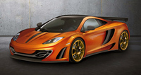
El próximo día 6 de marzo el preparador alemán Mansory presentará en el Salón de Ginebra su reinterpretación del superdeportivo británico actual por excelencia, el Mclaren MP4-12C, al que otros preparadores ya han metido mano. De momento podemos ver las primeras imágenes.
Los cambios estéticos exteriores se centran en un kit de ensanchamiento de carrocería (60 milímetros más ancho) y elementos en fibra de carbono como el techo, los paragolpes delantero y trasero, las carcasas de los retrovisores, el splitter delantero o el alerón trasero. La apariencia se completa con las llantas doradas de 20 pulgadas con gomas 245/30Z R20 y 305/25 R21, delante y detrás, respectivamente..
La principal mejora se centra en el 3.8 litros biturbo que aumenta su potencia de los 600 CV de serie hasta los 670 CV a 7.100 RPM (y 675 Nm de par máximo entre 3.000 y 6.500 vueltas), gracias a un nuevo filtro de aire deportivo, un sistema de escape de altas prestaciones y modificaciones electrónicas. Debido a todo esto aumenta la velocidad punta de 330 km/h hasta 353 km/h. Los datos de aceleración y frenada también mejoran, pero todavía no disponemos de ellos.
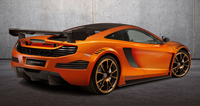
Vía | GT Spirit
En Motorpasión | Hennessey quiere meterle mano al McLaren MP4-12C
Wed, 29 Feb 2012 13:46:06 GMT
Ferrari F12 Berlinetta, directo a Ginebra
Ferrari F12 Berlinetta, directo a Ginebra
Tras dos años de rumores, informaciones sin contrastar y fotos espía, y después también de varios teaser ofrecidos recientemente por la propia marca, Ferrari presenta antes del Salón de Ginebra su nuevo y esperado buque insignia, el Ferrari F12 Berlinetta. Al contrario de lo que pensábamos, la nueva berlinetta de Ferrari, que viene a sustituir al Ferrari 599 GTB, no se llama 620 GT, sino F12 Berlinetta. Estamos ante el nuevo estandarte de la marca italiana, y como no podía ser de otra forma, esconde un V12 bajo el largo capó. El diseño de este F12 Berlinetta es el resultado de la colaboración entre el centro de diseño de Ferrari y Pininfarina. A simple vista apreciamos que destaca por un frontal muy al estilo del FF con una gran parrilla inferior presidida por el cavallino, una vista lateral muy sinuosa y musculada y una trasera muy moderna con cuatro salidas de escape y unas formas que parecen querer dar protagonismo al difusor. Gracias a elementos de su diseño el F12 Berlinetta consigue un Cx de 0.299 y genera una carga aerodinámica equivalente a 123 kilogramos cuando circula a 200 km/h. Resulta curioso un nuevo sistema denominado Active Brake Cooling capaz de abrir conductos para refrigerar los frenos carbonocerámicos de última generación (CCM3) cuando éstos trabajan a altas temparaturas. Si echamos un vistazo al habitáculo encontramos tapicería de cuero y una configuración centrada en el conductor, muy parecida a la del Ferrari 458 Italia, ya sea por el volante con mandos integrados (intermitentes, luces…) o por el cuadro de mandos digital. V12 ItalianoEl nuevo modelo del Cavallino es el Ferrari de calle más rápido y prestacional jamás construido gracias en parte al nuevo motor V12 de 6.262 centímetros cúbicos que esconde en el interior de ese alargado morro. Este motor atmosférico de doce cilindros arroja una potencia de 740 CV a 8.500 RPM y un par motor máximo de 690 Nm a 6.000 vueltas, un 80% del cual está disponible desde sólo 2.500 revoluciones. Este V12 consigue una potencia específica de 118 CV por litro y puede subir de vueltas hasta su límite de 8.700 revoluciones por minuto. El 6.2 V12 se combina con una transmisión F1 de doble embrague situada en posición transaxle para conseguir un reparto de pesos óptimo. En este caso de 46% delante y 54% detrás. Los 1.525 kilogramos de peso suponen 70 kilogramos menos que su predecesor, una relación peso/potencia de 2,1 kg por CV y la posibilidad de obtener unas prestaciones de primer nivel. El V12 es capaz de propulsar al F12 de 0 a 100 km/h en 3,1 segundos y de 0 a 200 km/h en 8,5 segundos. La velocidad máxima, por su parte, es de unos 340 km/h. Como curiosidad, el F12 Berlinetta para el crono en el circuito de Fiorano en sólo 1 minuto y 23 segundos, el mejor tiempo entre los Ferrari de calle. Además, según Ferrari el consumo de este nuevo V12 reduce las cifras de su predecesor en un 30%, hasta los 15 litros a los cien kilómetros, y consigue unas emisiones de dióxido de carbono de 350 gramos por kilómetro.
Galería de fotos
(Haz click en una imagen para ampliarla)
En Motorpasión | El nuevo Ferrari 620 GT se filtra antes de tiempo
Tras dos años de rumores, informaciones sin contrastar y fotos espía, y después también de varios teaser ofrecidos recientemente por la propia marca, Ferrari presenta antes del Salón de Ginebra su nuevo y esperado buque insignia, el Ferrari F12 Berlinetta.
Al contrario de lo que pensábamos, la nueva berlinetta de Ferrari, que viene a sustituir al Ferrari 599 GTB, no se llama 620 GT, sino F12 Berlinetta. Estamos ante el nuevo estandarte de la marca italiana, y como no podía ser de otra forma, esconde un V12 bajo el largo capó.
El diseño de este F12 Berlinetta es el resultado de la colaboración entre el centro de diseño de Ferrari y Pininfarina. A simple vista apreciamos que destaca por un frontal muy al estilo del FF con una gran parrilla inferior presidida por el cavallino, una vista lateral muy sinuosa y musculada y una trasera muy moderna con cuatro salidas de escape y unas formas que parecen querer dar protagonismo al difusor.
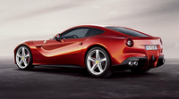
Gracias a elementos de su diseño el F12 Berlinetta consigue un Cx de 0.299 y genera una carga aerodinámica equivalente a 123 kilogramos cuando circula a 200 km/h. Resulta curioso un nuevo sistema denominado Active Brake Cooling capaz de abrir conductos para refrigerar los frenos carbonocerámicos de última generación (CCM3) cuando éstos trabajan a altas temparaturas.
Si echamos un vistazo al habitáculo encontramos tapicería de cuero y una configuración centrada en el conductor, muy parecida a la del Ferrari 458 Italia, ya sea por el volante con mandos integrados (intermitentes, luces…) o por el cuadro de mandos digital.
V12 Italiano
El nuevo modelo del Cavallino es el Ferrari de calle más rápido y prestacional jamás construido gracias en parte al nuevo motor V12 de 6.262 centímetros cúbicos que esconde en el interior de ese alargado morro.
Este motor atmosférico de doce cilindros arroja una potencia de 740 CV a 8.500 RPM y un par motor máximo de 690 Nm a 6.000 vueltas, un 80% del cual está disponible desde sólo 2.500 revoluciones. Este V12 consigue una potencia específica de 118 CV por litro y puede subir de vueltas hasta su límite de 8.700 revoluciones por minuto.
El 6.2 V12 se combina con una transmisión F1 de doble embrague situada en posición transaxle para conseguir un reparto de pesos óptimo. En este caso de 46% delante y 54% detrás.
Los 1.525 kilogramos de peso suponen 70 kilogramos menos que su predecesor, una relación peso/potencia de 2,1 kg por CV y la posibilidad de obtener unas prestaciones de primer nivel. El V12 es capaz de propulsar al F12 de 0 a 100 km/h en 3,1 segundos y de 0 a 200 km/h en 8,5 segundos. La velocidad máxima, por su parte, es de unos 340 km/h.
Como curiosidad, el F12 Berlinetta para el crono en el circuito de Fiorano en sólo 1 minuto y 23 segundos, el mejor tiempo entre los Ferrari de calle. Además, según Ferrari el consumo de este nuevo V12 reduce las cifras de su predecesor en un 30%, hasta los 15 litros a los cien kilómetros, y consigue unas emisiones de dióxido de carbono de 350 gramos por kilómetro.
Galería de fotos
(Haz click en una imagen para ampliarla)
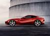
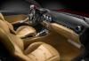
En Motorpasión | El nuevo Ferrari 620 GT se filtra antes de tiempo
Wed, 29 Feb 2012 12:00:00 GMT
Volkswagen Golf GTI... ¡Cabrio!
Volkswagen Golf GTI... ¡Cabrio!
Volkswagen ha querido dar una vuelta de tuerca a su GTI lanzando en el Salón de Ginebra la primera versión Cabrio de la historia de los Golf GTI. El Volkswagen Golf GTI Cabriolet se vale de su motor TSI 2.0 de 210 CV para acelerar de 0 a 100 km/h en 7,3 segundos y despeinarse al viento a una velocidad máxima de 237 km/h como nunca antes había hecho un Golf descapotable. Sale a la calle con cambio manual de 6 velocidades y opcionalmente con doble embrague DSG y, de serie, con bloqueo de diferencial transversal XDS para transmitir su par máximo de 280 Nm a partir de 1.700 vueltas y de forma constante hasta las 5.300 rpm. Su consumo homologado es de 7,6 l/100 km con unas emisiones de CO2 de 177 g/km, y en la versión con DSG es de 7,7 l/100 km con 180 g/km. En lo estético, vemos lo clásico de un GTI. Perfiles en rojo, paragolpes GTI, estriberas ensanchadas, escapes cromados, faros traseros de ledes, llantas de 17 pulgadas, asientos deportivos, tapicería a cuadros… Es decir, tenemos las virtudes del Golf GTI aunadas con el detalle de la capota que hará las delicias de más de un comprador a partir de este verano, cuando se pondrá a la venta. Fiel a la estética de los Golf Cabrio, la capota sigue siendo de lona, cuya apertura se realiza por medio de un sistema electrohidráulico en un tiempo de 9,5 segundos siempre que el vehículo circule como máximo a 30 km/h. Quizá sorprende un poco que se haga realidad esta unión entre el Golf GTI y el Golf Cabrio a poco tiempo (relativamente) de que salga a la luz la séptima generación de los Volkswagen Golf, pero quizá quien pueda permitírselo (cueste lo que cueste, que aún no se sabe cuánto será) pase por alto ese detalle y se haga con el primer Golf GTI Cabrio de la historia. Galería de fotos (Haz click en una imagen para ampliarla)
En Motorpasión | ¿Cómo será la siguiente generación del Volkswagen Golf?
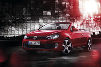
Volkswagen ha querido dar una vuelta de tuerca a su GTI lanzando en el Salón de Ginebra la primera versión Cabrio de la historia de los Golf GTI. El Volkswagen Golf GTI Cabriolet se vale de su motor TSI 2.0 de 210 CV para acelerar de 0 a 100 km/h en 7,3 segundos y despeinarse al viento a una velocidad máxima de 237 km/h como nunca antes había hecho un Golf descapotable.
Sale a la calle con cambio manual de 6 velocidades y opcionalmente con doble embrague DSG y, de serie, con bloqueo de diferencial transversal XDS para transmitir su par máximo de 280 Nm a partir de 1.700 vueltas y de forma constante hasta las 5.300 rpm. Su consumo homologado es de 7,6 l/100 km con unas emisiones de CO2 de 177 g/km, y en la versión con DSG es de 7,7 l/100 km con 180 g/km.
En lo estético, vemos lo clásico de un GTI. Perfiles en rojo, paragolpes GTI, estriberas ensanchadas, escapes cromados, faros traseros de ledes, llantas de 17 pulgadas, asientos deportivos, tapicería a cuadros… Es decir, tenemos las virtudes del Golf GTI aunadas con el detalle de la capota que hará las delicias de más de un comprador a partir de este verano, cuando se pondrá a la venta.
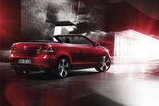
Fiel a la estética de los Golf Cabrio, la capota sigue siendo de lona, cuya apertura se realiza por medio de un sistema electrohidráulico en un tiempo de 9,5 segundos siempre que el vehículo circule como máximo a 30 km/h.
Quizá sorprende un poco que se haga realidad esta unión entre el Golf GTI y el Golf Cabrio a poco tiempo (relativamente) de que salga a la luz la séptima generación de los Volkswagen Golf, pero quizá quien pueda permitírselo (cueste lo que cueste, que aún no se sabe cuánto será) pase por alto ese detalle y se haga con el primer Golf GTI Cabrio de la historia.
Galería de fotos
(Haz click en una imagen para ampliarla)
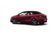
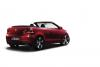
En Motorpasión | ¿Cómo será la siguiente generación del Volkswagen Golf?
Wed, 29 Feb 2012 08:00:00 GMT
Audi A1 Quattro, la exclusividad cuesta 53.600 euros
Audi A1 Quattro, la exclusividad cuesta 53.600 euros
En el mes de diciembre por fin Audi hizo oficial que fabricaría el Audi A1 Quattro, la versión más deportiva y radical del pequeño utilitario, basado en el impresionante prototipo Audi A1 clubsport quattro. Solo 333 unidades, las mismas que se fabricaron del Audi R8 GT y del Audi R8 GT Spyder y ya sabemos cuanto tendrá que desembolsar cada uno de sus compradores por hacerse con uno de los coches más exclusivos del mercado: el Audi A1 Quattro costará 53.600 euros. Eso es lo que hay que pagar por disfrutar de sus 256 caballos de potencia, de la tracción Quattro y de una aceleración de 0 a 100 km/h en solo 5,7 segundos. Este pequeño “monstruo” del asfalto solo estará disponible en color Blanco Glaciar metalizado, con el techo pintado en color negro brillante y su equipamiento es de lo más completo. Será por el momento el único A1 con tracción Quattro. En conducción normal la fuerza se transmite a las ruedas delanteras, pero si hay pérdidas de adherencia en solo unos milisegundos se puede pasar a las ruedas traseras. ¿Entendéis las derrapadas del vídeo? Hasta mañana día 1 de marzo la marca no acepta pedidos, así que no corráis a vuestro concesionario hasta entonces. Lo que es casi seguro, es que las 333 se agotarán pronto repartidas principalmente entre los países del centro y sur oeste de Europa, aunque Audi también ha anunciado que algunas unidades se venderán en América del Sur. Las primeras unidades se entregarán a mediados de este año, justo antes de que comience la temporada de verano. Nos queda la posibilidad de que matriculen alguna unidad de Prensa en España para poder saber que se siente a los mandos. En Motorpasión | Audi A1 Quattro, ya está aquí el A1 que estábamos esperando
En el mes de diciembre por fin Audi hizo oficial que fabricaría el Audi A1 Quattro, la versión más deportiva y radical del pequeño utilitario, basado en el impresionante prototipo Audi A1 clubsport quattro.
Solo 333 unidades, las mismas que se fabricaron del Audi R8 GT y del Audi R8 GT Spyder y ya sabemos cuanto tendrá que desembolsar cada uno de sus compradores por hacerse con uno de los coches más exclusivos del mercado: el Audi A1 Quattro costará 53.600 euros.
Eso es lo que hay que pagar por disfrutar de sus 256 caballos de potencia, de la tracción Quattro y de una aceleración de 0 a 100 km/h en solo 5,7 segundos. Este pequeño “monstruo” del asfalto solo estará disponible en color Blanco Glaciar metalizado, con el techo pintado en color negro brillante y su equipamiento es de lo más completo.
Será por el momento el único A1 con tracción Quattro. En conducción normal la fuerza se transmite a las ruedas delanteras, pero si hay pérdidas de adherencia en solo unos milisegundos se puede pasar a las ruedas traseras. ¿Entendéis las derrapadas del vídeo?
Hasta mañana día 1 de marzo la marca no acepta pedidos, así que no corráis a vuestro concesionario hasta entonces. Lo que es casi seguro, es que las 333 se agotarán pronto repartidas principalmente entre los países del centro y sur oeste de Europa, aunque Audi también ha anunciado que algunas unidades se venderán en América del Sur.
Las primeras unidades se entregarán a mediados de este año, justo antes de que comience la temporada de verano. Nos queda la posibilidad de que matriculen alguna unidad de Prensa en España para poder saber que se siente a los mandos.
En Motorpasión | Audi A1 Quattro, ya está aquí el A1 que estábamos esperando
Wed, 29 Feb 2012 06:00:00 GMT
Honda Insight 2012, a la venta por 22.200 euros
Honda Insight 2012, a la venta por 22.200 euros
El “híbrido para todos” pasa a ser “híbrido para pocos”. Es un modelo que, lamentablemente, se vende muy poco. Honda España ha debido estimar que venden más versiones de alta gama, porque se ha suprimido el escalón de acceso en la gama 2012. Ya no hay versión Elegance, que se vendía por 19.900 euros. Solo hay una versión, Executive, que cuesta 22.200 euros, y sin extras. Eso está por encima del Toyota Auris HSD en acabado Active (menos equipado), y un poco menos que el Advance (equipamiento similar y 240 euros más). Ya no se puede elegir el navegador integrado ni la tapicería de cuero. Los cambios de la gama 2012 los explicamos hace unos meses. A cambio, pasan a ser de serie los sensores de aparcamiento traseros y las lunas tintadas. Su equipación tiene prácticamente todo lo que un conductor medio puede necesitar: sensores de luz/lluvia, radio-CD MP3 con USB y Bluetooth, faros antiniebla, llantas de 16”, climatizador automático, control de estabilidad, etc. Uno de los alicientes del Insight era precisamente el precio inferior a los Toyota. Va más equipado, pero encarece el precio. Si comparamos el equipamiento del Insight Executive de 2009 (ver detalle) y el de 2012, no sube tanto, pero el precio sí: antes costaba 20.800 euros. El consumo es menor, baja de 4,6 l/100 km a 4,3 l/100 km. Sigue estando por encima de compactos diesel en torno a 100 CV, y muchos ya homologan eso y menos. Por poner un ejemplo de la misma casa, el Civic 2.2 i-DTEC homologa 4,2-4,4 l/100 km, pero con 150 caballos en vez de 98. Por solo 300 euros más, nos llevamos un Honda Civic Diesel. ¿Cuánto consume el Insight? Del modelo 2009 hay 5,48 l/100 km de media en Spritmonitor, y muchos bajan de 5 l/100 km. Si damos como válida la reducción de 0,3 l/100 km en consumos reales, hablaríamos de 5,2 l/100 km, redondeando. No deja de ser bajo, pero es difícil ser competitivo con tanto petrolero suelto. En Motorpasión | Honda Insight 2012
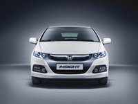
El “híbrido para todos” pasa a ser “híbrido para pocos”. Es un modelo que, lamentablemente, se vende muy poco. Honda España ha debido estimar que venden más versiones de alta gama, porque se ha suprimido el escalón de acceso en la gama 2012. Ya no hay versión Elegance, que se vendía por 19.900 euros.
Solo hay una versión, Executive, que cuesta 22.200 euros, y sin extras. Eso está por encima del Toyota Auris HSD en acabado Active (menos equipado), y un poco menos que el Advance (equipamiento similar y 240 euros más). Ya no se puede elegir el navegador integrado ni la tapicería de cuero. Los cambios de la gama 2012 los explicamos hace unos meses.
A cambio, pasan a ser de serie los sensores de aparcamiento traseros y las lunas tintadas. Su equipación tiene prácticamente todo lo que un conductor medio puede necesitar: sensores de luz/lluvia, radio-CD MP3 con USB y Bluetooth, faros antiniebla, llantas de 16”, climatizador automático, control de estabilidad, etc.
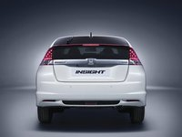
Uno de los alicientes del Insight era precisamente el precio inferior a los Toyota. Va más equipado, pero encarece el precio. Si comparamos el equipamiento del Insight Executive de 2009 (ver detalle) y el de 2012, no sube tanto, pero el precio sí: antes costaba 20.800 euros.
El consumo es menor, baja de 4,6 l/100 km a 4,3 l/100 km. Sigue estando por encima de compactos diesel en torno a 100 CV, y muchos ya homologan eso y menos. Por poner un ejemplo de la misma casa, el Civic 2.2 i-DTEC homologa 4,2-4,4 l/100 km, pero con 150 caballos en vez de 98. Por solo 300 euros más, nos llevamos un Honda Civic Diesel.
¿Cuánto consume el Insight? Del modelo 2009 hay 5,48 l/100 km de media en Spritmonitor, y muchos bajan de 5 l/100 km. Si damos como válida la reducción de 0,3 l/100 km en consumos reales, hablaríamos de 5,2 l/100 km, redondeando. No deja de ser bajo, pero es difícil ser competitivo con tanto petrolero suelto.
En Motorpasión | Honda Insight 2012
Tue, 28 Feb 2012 19:30:00 GMT
Portugal facilitará un poco la vida a los españoles que pasen sus peajes
Portugal facilitará un poco la vida a los españoles que pasen sus peajes
Ayer se entrevistó en Lisboa la ministra de Fomento, Ana Pastor, con su homólogo portugués para tratar entre otras cosas el tema de los peajes. Hace meses que Portugal eliminó la gratuidad de varias autopistas, haciéndolas de peaje, pero sin barreras. Es necesario el uso de un dispositivo electrónico para circular legalmente. Este dispositivo funciona de forma similar al Via T español. El aparato se identifica ante el peaje, con o sin barrera, y se carga el importe en la cuenta del propietario o empresa. Pero el Via T español no funciona en Portugal, y ambos ministros acordaron facilitar su implantación. Si los portugueses se quejan de los peajes, nosotros no nos quedamos cortos, es dinero para pagar su crisis, no para mantener las carreteras ni para mejorarlas. El ministro luso piensa que no estamos bien informados sobre los sistemas de pago (ver detalle). Yo pienso que no se ha informado que los españoles y los peajes nos llevamos muy mal. Si el Via T funciona, será un beneficio para sus usuarios, pero no para el resto de conductores que no sean asiduos al peaje. A fin de cuentas el Via T tampoco es gratuito. Mientras tanto, españoles y portugueses reducen notablemente el uso de esas carreteras, se habla de un 40% de espantada de conductores. Vía | Autopista.es En Motorpasión | Peajes en Portugal, guía de supervivencia para el conductor español
Ayer se entrevistó en Lisboa la ministra de Fomento, Ana Pastor, con su homólogo portugués para tratar entre otras cosas el tema de los peajes. Hace meses que Portugal eliminó la gratuidad de varias autopistas, haciéndolas de peaje, pero sin barreras. Es necesario el uso de un dispositivo electrónico para circular legalmente.
Este dispositivo funciona de forma similar al Via T español. El aparato se identifica ante el peaje, con o sin barrera, y se carga el importe en la cuenta del propietario o empresa. Pero el Via T español no funciona en Portugal, y ambos ministros acordaron facilitar su implantación.
Si los portugueses se quejan de los peajes, nosotros no nos quedamos cortos, es dinero para pagar su crisis, no para mantener las carreteras ni para mejorarlas. El ministro luso piensa que no estamos bien informados sobre los sistemas de pago (ver detalle). Yo pienso que no se ha informado que los españoles y los peajes nos llevamos muy mal.
Si el Via T funciona, será un beneficio para sus usuarios, pero no para el resto de conductores que no sean asiduos al peaje. A fin de cuentas el Via T tampoco es gratuito. Mientras tanto, españoles y portugueses reducen notablemente el uso de esas carreteras, se habla de un 40% de espantada de conductores.
Vía | Autopista.es
En Motorpasión | Peajes en Portugal, guía de supervivencia para el conductor español
Tue, 28 Feb 2012 17:30:21 GMT
"Sí, yo me cargué un Chevrolet Camaro ZL1 de prensa"
"Sí, yo me cargué un Chevrolet Camaro ZL1 de prensa"
En la profesión de periodista del motor a veces ocurren accidentes. Cuando se prueban coches, siempre hay un riesgo, y si estos son de altas prestaciones, más. Nuestro protagonista es Aaron Gold, un periodista norteamericano que trabaja para Top Gear USA y About.com Cars. Tiene el dudoso honor de ser el primero que se estampa con un Chevrolet Camaro ZL1. No llega a la categoría de Dolorpasión porque los daños del coche no han sido especialmente graves, Gold salió ileso, pero ya tiene una espina más en su curriculum. Estaba en un evento de prensa, en el circuito de Virginia, tratando de domar sus 580 CV SAE en condiciones poco adecuadas: empezando a lloviznar. Gold dice que acabó saliéndose de una curva a más de 190 km/h pisando los frenos a tope, hizo tres trompos y se dio un tortazo contra la barrera de neumáticos. Luego matizó que en parte hablaba en broma, y que simplemente se le fue el coche en una curva de segunda marcha. De la foto de prensa al coche chocado, sin toneladas de Photoshop, dista un mundo. Al parecer, solo sufrió un pequeño incendio y la rotura del depósito del agua del lavaparabrisas. Gold no solo subestimó la potencia del coche, también subestimó el poder deslizante de la lluvia. Los periodistas de la vieja escuela, que han rodado muchos kilómetros con ruedas estrechitas, suelen comentar que en los coches modernos con tanto ancho de neumático en lluvia van vendidos. Si una pista está repleta de goma, por el evidente uso del circuito, y encima llovizna, la pista se convierte en una pista de patinaje. Error de novato, señor Gold. El mismo Gold ha entonado el mea culpa sobre su pifia en About.com Cars, y para los que entiendan inglés, no tiene desperdicio. Afortunadamente solo ha sido un susto, en la presentación del Opel GT se mató un periodista (2007) y por poco su acompañante, eso ya no tiene arreglo. El morro del ZL1 sí lo tiene. Vía | Carscoop Fuente | About.com Cars En Motorpasión | Todo sobre el Chevrolet Camaro ZL1
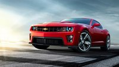
En la profesión de periodista del motor a veces ocurren accidentes. Cuando se prueban coches, siempre hay un riesgo, y si estos son de altas prestaciones, más. Nuestro protagonista es Aaron Gold, un periodista norteamericano que trabaja para Top Gear USA y About.com Cars. Tiene el dudoso honor de ser el primero que se estampa con un Chevrolet Camaro ZL1.
No llega a la categoría de Dolorpasión porque los daños del coche no han sido especialmente graves, Gold salió ileso, pero ya tiene una espina más en su curriculum. Estaba en un evento de prensa, en el circuito de Virginia, tratando de domar sus 580 CV SAE en condiciones poco adecuadas: empezando a lloviznar.
Gold dice que acabó saliéndose de una curva a más de 190 km/h pisando los frenos a tope, hizo tres trompos y se dio un tortazo contra la barrera de neumáticos. Luego matizó que en parte hablaba en broma, y que simplemente se le fue el coche en una curva de segunda marcha.
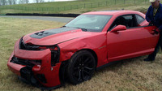
De la foto de prensa al coche chocado, sin toneladas de Photoshop, dista un mundo. Al parecer, solo sufrió un pequeño incendio y la rotura del depósito del agua del lavaparabrisas. Gold no solo subestimó la potencia del coche, también subestimó el poder deslizante de la lluvia.
Los periodistas de la vieja escuela, que han rodado muchos kilómetros con ruedas estrechitas, suelen comentar que en los coches modernos con tanto ancho de neumático en lluvia van vendidos. Si una pista está repleta de goma, por el evidente uso del circuito, y encima llovizna, la pista se convierte en una pista de patinaje. Error de novato, señor Gold.
El mismo Gold ha entonado el mea culpa sobre su pifia en About.com Cars, y para los que entiendan inglés, no tiene desperdicio. Afortunadamente solo ha sido un susto, en la presentación del Opel GT se mató un periodista (2007) y por poco su acompañante, eso ya no tiene arreglo. El morro del ZL1 sí lo tiene.
Vía | Carscoop
Fuente | About.com Cars
En Motorpasión | Todo sobre el Chevrolet Camaro ZL1
Tue, 28 Feb 2012 16:30:00 GMT
GM podría estar interesada en el grupo PSA
GM podría estar interesada en el grupo PSA
El mapa de acuerdos estratégicos en el mundo del automóvil se hace cada vez más complejo y difícil de seguir. En este caso, los dos grandes grupos que parece que van a entablar acuerdos estratégicos son GM y PSA. El acuerdo se produce en un contexto complicado tanto para Peugeot, cuyas ventas en Europa cayeron el año pasado casi un 9%, como para Opel, que acabó el año pasado con unas pérdidas cercanas a 750 millones de euros. La idea es que ambas marcas colaboraran para desarrollar nuevas tecnologías y vehículos de manera conjunta, aunque según parece, ambas compañías seguirían vendiendo su propia gama de vehículos. Una vez más parece que las economías de escala se imponen en el modelo industrial actual. La articulación financiera de esta operación se llevaría a cabo gracias a una participación accionarial de GM en Opel (en torno al 7%), lo que permitiría un punto de partida sólido para empezar nuevos proyectos. Sea como sea lo más probable es que estas incógnitas se desvelen durante la celebración del Salón de Ginebra. Vía | BBC En Motorpasión | ¿Realmente General Motors es culpable del final de Saab?
El mapa de acuerdos estratégicos en el mundo del automóvil se hace cada vez más complejo y difícil de seguir. En este caso, los dos grandes grupos que parece que van a entablar acuerdos estratégicos son GM y PSA.
El acuerdo se produce en un contexto complicado tanto para Peugeot, cuyas ventas en Europa cayeron el año pasado casi un 9%, como para Opel, que acabó el año pasado con unas pérdidas cercanas a 750 millones de euros.
La idea es que ambas marcas colaboraran para desarrollar nuevas tecnologías y vehículos de manera conjunta, aunque según parece, ambas compañías seguirían vendiendo su propia gama de vehículos. Una vez más parece que las economías de escala se imponen en el modelo industrial actual.
La articulación financiera de esta operación se llevaría a cabo gracias a una participación accionarial de GM en Opel (en torno al 7%), lo que permitiría un punto de partida sólido para empezar nuevos proyectos. Sea como sea lo más probable es que estas incógnitas se desvelen durante la celebración del Salón de Ginebra.
Vía | BBC
En Motorpasión | ¿Realmente General Motors es culpable del final de Saab?
Tue, 28 Feb 2012 11:26:16 GMT
El Toyota Prius Plug-in costará menos de 35.000 euros
El Toyota Prius Plug-in costará menos de 35.000 euros
El híbrido enchufable japonés llegará al mercado europeo este año, también a nuestro país. Su precio estará por debajo de 35.000 euros, muy por encima de las versiones híbridas a secas. En este precio no se incluye ningún tipo de subvención (2.000 a 3.000 euros). El sobreprecio de una conversión a enchufable de terceros cuesta la mitad (como la de Engineer) y da más autonomía. También conocemos la homologación definitiva. Para el prototipo que estuvo rodando desde 2010, se nos dijeron 20 km de autonomía eléctrica pura. Con motivo de la presentación de la gama 2012 la cifra subió a 23 km, pero el dato ha quedado establecido finalmente en 25 km. Es una mejora respecto al prototipo del 25%. Según homologación NEDC, funcionando en modo híbrido enchufable consume 2,1 l/100 km de gasolina, es decir, conduciendo de la misma forma que en dicho ciclo, donde se superan por breve espacio de tiempo los 100 km/h. Ojo, aunque vaya en modo enchufable, no supera esa velocidad sin el motor de gasolina de 99 CV, que arrancaría automáticamente. Si las baterías principales están descargadas, el consumo pasa a ser de 3,7 l/100 km, una rebaja de 0,2 l/100 km respecto al Prius Eco normal. Al igual que el modelo de acceso, el híbrido enchufable usa llantas de 15” y no las de 17” que tienen los Prius Advance o Executive. La capacidad del maletero no cambia respecto al Prius normal, es un avance, ya que en el prototipo había que sacrificar maletero. En cuanto a peso, son solo 50 kg más. Las baterías no se pueden recargar del todo en carretera, solo en un enchufe. Como tienen poca capacidad, la carga es muy rápida, en hora y media está listo. El gran problema es pues el precio. Es completamente absurdo pagar más de 10.000 euros de diferencia por ahorrar 0,2 l/100 km. Solo con el tapado de radiador (manual o mediante Eco-FLAPS) se puede ahorrar un poco más. Y aunque siempre se use el modo eléctrico a diario, es imposible amortizarlo. Económicamente es muy difícil de justificar ¿Y qué sentido tiene entonces este coche? Pues bien, un eléctrico puro está limitado por su autonomía, pero el Prius Plug-in no. Si se queda sin baterías, le quedan 45 litros de gasolina con los que puede hacer en condiciones reales 600 a 1.200 km, dependiendo de la forma de conducir y otras circunstancias. Mientras va en modo eléctrico, se le considera eléctrico, luego puede acceder a cascos históricos con tráfico restringido, no pagar zona azul en determinadas ciudades, etc. El conductor puede elegir a voluntad cuándo usar la carga. Se maximiza el beneficio si se utiliza en zona urbana o en trayectos cortos hasta 100 km/h. Para ahorrar respecto a un Prius, es un sinsentido, aunque la gasolina cueste ocho veces más que la electricidad. Ahora bien, seguro que hay clientes dispuestos a pagar la diferencia por tener más tracción eléctrica, que se limita a 2-3 kilómetros en el modelo convencional. Tiene un precio similar o superior a modelos eléctricos puros, pero no tiene la desventaja de la autonomía. Es más barato que el Opel Ampera, consume menos en carretera en recorridos largos (donde ambos gastan gasolina), aunque tiene la tercera parte de autonomía eléctrica pura, y con prestaciones limitadas; el Ampera no. También se puede hacer la comparación, si se desea, con el BYD F3 DM de fabricación china, que es más económico, pero peor coche en general. Respecto a una berlina diesel, ya sea de bajo consumo o no, me parece dificilísimo de amortizar, a menos que el gasóleo pase a costar como el Champagne Moët Chandon por litro. ¿Le interesaría a los taxistas? Depende. Quientes tengan la posibilidad de cargarlo con regularidad y hagan pocas carreras fuera del núcleo urbano, les puede salir a cuenta. Para hacer mucha carretera no tiene justificación económica. Moverse en modo eléctrico mola, palabra de priusero, pero por 10.000 euros más va a ser que no.
Toyota Prius Plug-in(Haz click en una imagen para ampliarla)
En Motorpasión | Toyota Prius 2012: nueva imagen y nuevas versiones, enchufable y familiar
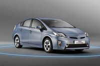
El híbrido enchufable japonés llegará al mercado europeo este año, también a nuestro país. Su precio estará por debajo de 35.000 euros, muy por encima de las versiones híbridas a secas. En este precio no se incluye ningún tipo de subvención (2.000 a 3.000 euros). El sobreprecio de una conversión a enchufable de terceros cuesta la mitad (como la de Engineer) y da más autonomía.
También conocemos la homologación definitiva. Para el prototipo que estuvo rodando desde 2010, se nos dijeron 20 km de autonomía eléctrica pura. Con motivo de la presentación de la gama 2012 la cifra subió a 23 km, pero el dato ha quedado establecido finalmente en 25 km. Es una mejora respecto al prototipo del 25%.
Según homologación NEDC, funcionando en modo híbrido enchufable consume 2,1 l/100 km de gasolina, es decir, conduciendo de la misma forma que en dicho ciclo, donde se superan por breve espacio de tiempo los 100 km/h. Ojo, aunque vaya en modo enchufable, no supera esa velocidad sin el motor de gasolina de 99 CV, que arrancaría automáticamente.
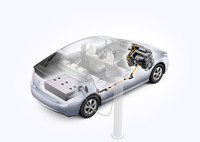
Si las baterías principales están descargadas, el consumo pasa a ser de 3,7 l/100 km, una rebaja de 0,2 l/100 km respecto al Prius Eco normal. Al igual que el modelo de acceso, el híbrido enchufable usa llantas de 15” y no las de 17” que tienen los Prius Advance o Executive.
La capacidad del maletero no cambia respecto al Prius normal, es un avance, ya que en el prototipo había que sacrificar maletero. En cuanto a peso, son solo 50 kg más. Las baterías no se pueden recargar del todo en carretera, solo en un enchufe. Como tienen poca capacidad, la carga es muy rápida, en hora y media está listo.
El gran problema es pues el precio. Es completamente absurdo pagar más de 10.000 euros de diferencia por ahorrar 0,2 l/100 km. Solo con el tapado de radiador (manual o mediante Eco-FLAPS) se puede ahorrar un poco más. Y aunque siempre se use el modo eléctrico a diario, es imposible amortizarlo.
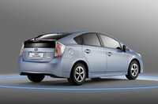
Económicamente es muy difícil de justificar
¿Y qué sentido tiene entonces este coche? Pues bien, un eléctrico puro está limitado por su autonomía, pero el Prius Plug-in no. Si se queda sin baterías, le quedan 45 litros de gasolina con los que puede hacer en condiciones reales 600 a 1.200 km, dependiendo de la forma de conducir y otras circunstancias.
Mientras va en modo eléctrico, se le considera eléctrico, luego puede acceder a cascos históricos con tráfico restringido, no pagar zona azul en determinadas ciudades, etc. El conductor puede elegir a voluntad cuándo usar la carga. Se maximiza el beneficio si se utiliza en zona urbana o en trayectos cortos hasta 100 km/h.
Para ahorrar respecto a un Prius, es un sinsentido, aunque la gasolina cueste ocho veces más que la electricidad. Ahora bien, seguro que hay clientes dispuestos a pagar la diferencia por tener más tracción eléctrica, que se limita a 2-3 kilómetros en el modelo convencional.
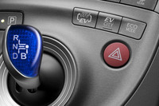
Tiene un precio similar o superior a modelos eléctricos puros, pero no tiene la desventaja de la autonomía. Es más barato que el Opel Ampera, consume menos en carretera en recorridos largos (donde ambos gastan gasolina), aunque tiene la tercera parte de autonomía eléctrica pura, y con prestaciones limitadas; el Ampera no.
También se puede hacer la comparación, si se desea, con el BYD F3 DM de fabricación china, que es más económico, pero peor coche en general. Respecto a una berlina diesel, ya sea de bajo consumo o no, me parece dificilísimo de amortizar, a menos que el gasóleo pase a costar como el Champagne Moët Chandon por litro.
¿Le interesaría a los taxistas? Depende. Quientes tengan la posibilidad de cargarlo con regularidad y hagan pocas carreras fuera del núcleo urbano, les puede salir a cuenta. Para hacer mucha carretera no tiene justificación económica. Moverse en modo eléctrico mola, palabra de priusero, pero por 10.000 euros más va a ser que no.
Toyota Prius Plug-in
(Haz click en una imagen para ampliarla)
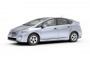
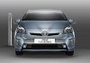
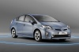
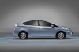
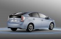
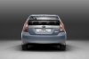
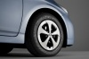
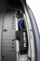
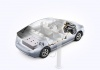
En Motorpasión | Toyota Prius 2012: nueva imagen y nuevas versiones, enchufable y familiar
Tue, 28 Feb 2012 07:00:00 GMT
Jaguar XK Artisan Edition para el Salón de Ginebra
Jaguar XK Artisan Edition para el Salón de Ginebra
El próximo día 6 de marzo la prensa especializada del automóvil de todo el mundo tiene una de las grandes citas anuales, el Salón de Ginebra. Ya sabemos cuales serán las novedades de muchas de las marcas que allí se darán cita, pero hasta hoy no habíamos sabido nada del Jaguar XK Artisan Edition. Se trata de una edición limitada del modelo más deportivo de la marca, que estará disponible tanto en carrocería coupé como descapotable. La principal característica de éste Jaguar XK Artisian Edition es que los interiores están fabricados de forma artesanal. Los asientos, los paneles de las puertas y el salpicadero van forrados en piel Scraffito Grain que combinan a la perfección con la piel Poltrona Frau® utilizada en el techo. El equipamiento de serie aumenta, incluyendo asientos y volante calefactados, acceso sin llave y un equipo de sonido mejorado entre otros. En los estribos laterales cuando abres la puerta, hay una placa con la inscripción Special Edition. Por último, las versiones descapotables tienen la capota de tela disponible en colores negro, azul, gris o marrón. Completan el conjunto las llantas de aleación específicas de 20 pulgadas. Jaguar no ha dicho el número de unidades a las que está limitada esta edición especial, pero si que ha adelantado los precios que tendrá en España en las diferentes versiones del motor V8, el atmosférico de 385 caballos o el sobrealimentado del XKR con 510 caballos. Precios del Jaguar XK Artisian Edition en España
XK 5.0 V8 Atmosférico Portfolio Cupé “Artisan Edition” – 123.750 € XK 5.0 V8 Atmosférico Portfolio Convertible “Artisan Edition” – 131.700 €
XKR 5.0 V8 Coupe “Artisan Edition” – 135.850 €
XKR 5.0 V8 Convertible “Artisan Edition” – 143.900 € En Motorpasión | Jaguar XKR-S: citius, altius et fortius
El próximo día 6 de marzo la prensa especializada del automóvil de todo el mundo tiene una de las grandes citas anuales, el Salón de Ginebra. Ya sabemos cuales serán las novedades de muchas de las marcas que allí se darán cita, pero hasta hoy no habíamos sabido nada del Jaguar XK Artisan Edition.
Se trata de una edición limitada del modelo más deportivo de la marca, que estará disponible tanto en carrocería coupé como descapotable. La principal característica de éste Jaguar XK Artisian Edition es que los interiores están fabricados de forma artesanal.
Los asientos, los paneles de las puertas y el salpicadero van forrados en piel Scraffito Grain que combinan a la perfección con la piel Poltrona Frau® utilizada en el techo. El equipamiento de serie aumenta, incluyendo asientos y volante calefactados, acceso sin llave y un equipo de sonido mejorado entre otros.
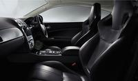
En los estribos laterales cuando abres la puerta, hay una placa con la inscripción Special Edition. Por último, las versiones descapotables tienen la capota de tela disponible en colores negro, azul, gris o marrón. Completan el conjunto las llantas de aleación específicas de 20 pulgadas.
Jaguar no ha dicho el número de unidades a las que está limitada esta edición especial, pero si que ha adelantado los precios que tendrá en España en las diferentes versiones del motor V8, el atmosférico de 385 caballos o el sobrealimentado del XKR con 510 caballos.
Precios del Jaguar XK Artisian Edition en España
- XK 5.0 V8 Atmosférico Portfolio Cupé “Artisan Edition” – 123.750 €
- XK 5.0 V8 Atmosférico Portfolio Convertible “Artisan Edition” – 131.700 €
-
XKR 5.0 V8 Coupe “Artisan Edition” – 135.850 €
-
XKR 5.0 V8 Convertible “Artisan Edition” – 143.900 €
En Motorpasión | Jaguar XKR-S: citius, altius et fortius
Mon, 27 Feb 2012 15:30:00 GMT
Lamborghini Aventador LP700-4 Molto Veloce por DMC
Lamborghini Aventador LP700-4 Molto Veloce por DMC
El preparador alemán DMC acaba de presentar oficialmente las primeras imágenes de su última creación, basada en el toro más salvaje de Sant’Agata Bolognese, el Lamborghini LP 700-4 Aventador, y bajo el sobrenombre de “Molto Veloce“, que no creo que haga falta traducir, ¿verdad? Con un apodo tan particular como “Molto Veloce”, cabe esperar que haya mejoras que afecten al V12 que de serie produce 700 CV, aunque de momento lo único que podemos ver en las imágenes es el paquete aerodinámico cuyo objetivo principal es hacer todavía más agresiva y radical la apariencia del Aventador. Este kit aerodinámico está fabricado íntegramente en fibra de carbono e incluye un paragolpes delantero de nuevo diseño, así como un spoiler frontal, taloneras de nueva factura, un gran alerón trasero o un difusor completamente rediseñado. Podéis ver más imágenes a continuación. Galería de fotos (Haz click en una imagen para ampliarla)
Vía | GT Spirit En Motorpasión | Oakley Design Lamborghini LP770-2 Aventador
El preparador alemán DMC acaba de presentar oficialmente las primeras imágenes de su última creación, basada en el toro más salvaje de Sant’Agata Bolognese, el Lamborghini LP 700-4 Aventador, y bajo el sobrenombre de “Molto Veloce“, que no creo que haga falta traducir, ¿verdad?
Con un apodo tan particular como “Molto Veloce”, cabe esperar que haya mejoras que afecten al V12 que de serie produce 700 CV, aunque de momento lo único que podemos ver en las imágenes es el paquete aerodinámico cuyo objetivo principal es hacer todavía más agresiva y radical la apariencia del Aventador.
Este kit aerodinámico está fabricado íntegramente en fibra de carbono e incluye un paragolpes delantero de nuevo diseño, así como un spoiler frontal, taloneras de nueva factura, un gran alerón trasero o un difusor completamente rediseñado. Podéis ver más imágenes a continuación.
Galería de fotos
(Haz click en una imagen para ampliarla)
Vía | GT Spirit
En Motorpasión | Oakley Design Lamborghini LP770-2 Aventador
Mon, 27 Feb 2012 11:45:00 GMT
Opel anuncia la creación de una nueva familia de motores
Opel anuncia la creación de una nueva familia de motores
Las evoluciones técnicas en los motores van últimamente en la misma dirección, mejorar la eficiencia. La última en anunciar mejoras en este aspecto ha sido Opel, con novedades importantes por cierto. De hecho, la marca anuncia que está desarrollando una nueva generación de motores que contarán con nuevas tecnologías enfocadas en la mejora del consumo, como la turboalimentación, y la posibilidad de ser usados como parte de un sistema híbrido. Además, Opel anuncia que habrá tres tipos de motores nuevos. Dos medianos, en diesel y gasolina (seguramente de 1.600 centímetros cúbicos) y un pequeño (entre 1.0 y 1.4), de tres o cuatro cilindros que además podría funcionar con combustibles alternativos a la gasolina. Esta nueva gama de motores sería compatible con el nuevo motor 2.0 CDTI BiTurbo, ya que este entrega 195 CV, y se sitúa por tanto en la zona alta de los ofertados por Opel, aquí estamos hablando de los motores de potencia baja y media. Por otro lado la marca ha anunciado que, aunque no retirará sus motores V6, tan sólo los evolucionará, quedando descartada la posibilidad de ver una nueva generación propiamente dicha, de este tipo de motores. No es que sorprenda a nadie, pero había que confirmar la noticia. Una última cosa. En principio se espera que el primer modelo en estrenar esta tecnología sea el próximo Opel Corsa, pero más adelante el resto de marcas de GM también podrán contar con estos nuevos motores. Vía | Autocar En Motorpasión | Opel Insignia 2.0 CDTI BiTurbo, presentación y prueba en Portugal (parte 1, parte 2)
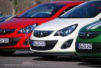
Las evoluciones técnicas en los motores van últimamente en la misma dirección, mejorar la eficiencia. La última en anunciar mejoras en este aspecto ha sido Opel, con novedades importantes por cierto.
De hecho, la marca anuncia que está desarrollando una nueva generación de motores que contarán con nuevas tecnologías enfocadas en la mejora del consumo, como la turboalimentación, y la posibilidad de ser usados como parte de un sistema híbrido.
Además, Opel anuncia que habrá tres tipos de motores nuevos. Dos medianos, en diesel y gasolina (seguramente de 1.600 centímetros cúbicos) y un pequeño (entre 1.0 y 1.4), de tres o cuatro cilindros que además podría funcionar con combustibles alternativos a la gasolina.
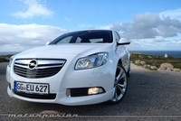
Esta nueva gama de motores sería compatible con el nuevo motor 2.0 CDTI BiTurbo, ya que este entrega 195 CV, y se sitúa por tanto en la zona alta de los ofertados por Opel, aquí estamos hablando de los motores de potencia baja y media.
Por otro lado la marca ha anunciado que, aunque no retirará sus motores V6, tan sólo los evolucionará, quedando descartada la posibilidad de ver una nueva generación propiamente dicha, de este tipo de motores. No es que sorprenda a nadie, pero había que confirmar la noticia.
Una última cosa. En principio se espera que el primer modelo en estrenar esta tecnología sea el próximo Opel Corsa, pero más adelante el resto de marcas de GM también podrán contar con estos nuevos motores.
Vía | Autocar
En Motorpasión | Opel Insignia 2.0 CDTI BiTurbo, presentación y prueba en Portugal (parte 1, parte 2)
Thu, 01 Mar 2012 10:00:00 GMT
Ventas de Febrero 2012: siguen cayendo, pero menos
Ventas de Febrero 2012: siguen cayendo, pero menos
El mes pasado se vendieron en España 64.732 turismos y todoterrenos, un descenso del 2,18% respecto a febrero de 2011. Esta caída neutraliza el respiro del mes de enero. En el acumulado de los dos meses, 119.695 coches y todoterrenos, una diferencia de -0,1% con enero y febrero de 2011. Prácticamente son tablas. 2012 no va a ser un buen año, será malísimo, la patronal de los concesionarios (FACONAUTO) baraja la cifra de 788.000 unidades e incluso menos. Eso es menos de la mitad de los coches que se vendieron en 2007, cuando España era rica. 2010 y 2011 ya fueron malos años, y a duras penas se vendieron más de 800.000 unidades cada ejercicio. Recientemente el Gobierno ha reducido en 30 millones de euros el presupuesto destinado a ayudas a coches eléctricos, ¡no se han gastado! La patronal del automóvil pide que se emplée ese dinero para un plan de ayudas a la compra con achatarramiento de coches viejos. Podría facilitar 60.000 compras a 500 euros cada una, y el presupuesto se agotaría seguro. Radiografía del mercado español actual La misma patronal, en un ataque de optimismo, ya habla de tocar suelo, es decir, no esperan que las ventas sigan bajando mucho más. El tiempo dirá si tienen razón, o si todavía puede ser peor. Un vistazo a cualquier telediario nos devuelve al mundo real, todavía hay mucho que recortar, no parece el mejor momento para comprar un coche. Solo hace unos días, Expansión nos contaba que aunque en España nunca ha habido tantos turismos y todoterrenos dados de alta en la DGT (28 millones), en 2011 bajó el consumo de combustibles en un 6%, 27 millones de toneladas. Gastamos tanto como en 2002/2003, cuando no había tantas unidades. Su explicación: miles y miles de coches están parados, como sus dueños. Las grandes petroleras siguen subiendo los precios mientras los clientes siguen echando menos y reduciendo su uso del vehículo particular. Durante este año, ya hemos empezado con la gasolina más cara de nuestra historia en tiempo de paz, y la situación puede empeorar mucho más todavía. Al gasóleo le falta poco para romper su máximo. De seguir las bajas ventas, en 2014 la mitad de los coches españoles tendrán más de 10 años. El 40% del parque actual no cumple ni la Euro 3. Estamos próximos a homologarnos en materia de parque automovilístico con Rumanía, Turquía, Estonia o Grecia. Algunos hablan de brotes verdes, pero yo aquí solo veo chapapote. Los particulares ya compran menos de la mitad de los coches y todoterrenos en España, las empresas y alquiladoras los han superado tras 20 meses consecutivos de reducción de compras privadas. Las empresas de alquiler siguen subiendo, en lo que va de año, han comprado un 19,4% más que en enero y febrero de 2011. Entre enero y febrero, Peugeot, Volkswagen y Citroën lideran las ventas, con poca distancia entre las dos primeras. SEAT, primera marca de 2010 y 2011, está en quinto lugar. Por modelos, acumulan más de 4.000 unidades los Citroën C4, SEAT Ibiza, Nissan Qashqai y Renault Mégane. La cuota diesel ha bajado del 70%, los gasolina recuperan un poco de terreno, pero es pronto para colgar medallas. Por segmentos, encontramos brotes verdes en el segmento más bajo, Micro, que sube más del 30% en 2012. El lujo ya cae a plomo, y ya era hora, con caídas superiores al 20% interanual. La situación es muy diferente a nivel de provincias. En el vagón de cola, Cuenca, Ceuta y Lugo, con caídas respecto a 2011 (ene-feb) del 30% o más. Muy diferente es la situación en Zaragoza, Toledo, Madrid o Melilla, que suben en matriculaciones más del 10% comparando con el mismo periodo del año anterior. A nivel de comunidades autónomas, solo Madrid (+14,2%), Aragón (+7,4%) y La Rioja (+3,4%) compran más coches. Los que menos, Extremadura (-18%), Galicia (-11,4%) y Comunidad Valenciana (-11,1%). Como siempre, se verifica el axioma de que las crisis nunca son iguales para todos. ¿Hasta cuándo bajarán las ventas? Fuente | ANFAC
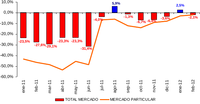
El mes pasado se vendieron en España 64.732 turismos y todoterrenos, un descenso del 2,18% respecto a febrero de 2011. Esta caída neutraliza el respiro del mes de enero. En el acumulado de los dos meses, 119.695 coches y todoterrenos, una diferencia de -0,1% con enero y febrero de 2011. Prácticamente son tablas.
2012 no va a ser un buen año, será malísimo, la patronal de los concesionarios (FACONAUTO) baraja la cifra de 788.000 unidades e incluso menos. Eso es menos de la mitad de los coches que se vendieron en 2007, cuando España era rica. 2010 y 2011 ya fueron malos años, y a duras penas se vendieron más de 800.000 unidades cada ejercicio.
Recientemente el Gobierno ha reducido en 30 millones de euros el presupuesto destinado a ayudas a coches eléctricos, ¡no se han gastado! La patronal del automóvil pide que se emplée ese dinero para un plan de ayudas a la compra con achatarramiento de coches viejos. Podría facilitar 60.000 compras a 500 euros cada una, y el presupuesto se agotaría seguro.
Radiografía del mercado español actual
La misma patronal, en un ataque de optimismo, ya habla de tocar suelo, es decir, no esperan que las ventas sigan bajando mucho más. El tiempo dirá si tienen razón, o si todavía puede ser peor. Un vistazo a cualquier telediario nos devuelve al mundo real, todavía hay mucho que recortar, no parece el mejor momento para comprar un coche.
Solo hace unos días, Expansión nos contaba que aunque en España nunca ha habido tantos turismos y todoterrenos dados de alta en la DGT (28 millones), en 2011 bajó el consumo de combustibles en un 6%, 27 millones de toneladas. Gastamos tanto como en 2002/2003, cuando no había tantas unidades. Su explicación: miles y miles de coches están parados, como sus dueños.
Las grandes petroleras siguen subiendo los precios mientras los clientes siguen echando menos y reduciendo su uso del vehículo particular. Durante este año, ya hemos empezado con la gasolina más cara de nuestra historia en tiempo de paz, y la situación puede empeorar mucho más todavía. Al gasóleo le falta poco para romper su máximo.
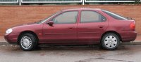
De seguir las bajas ventas, en 2014 la mitad de los coches españoles tendrán más de 10 años. El 40% del parque actual no cumple ni la Euro 3. Estamos próximos a homologarnos en materia de parque automovilístico con Rumanía, Turquía, Estonia o Grecia. Algunos hablan de brotes verdes, pero yo aquí solo veo chapapote.
Los particulares ya compran menos de la mitad de los coches y todoterrenos en España, las empresas y alquiladoras los han superado tras 20 meses consecutivos de reducción de compras privadas. Las empresas de alquiler siguen subiendo, en lo que va de año, han comprado un 19,4% más que en enero y febrero de 2011.
Entre enero y febrero, Peugeot, Volkswagen y Citroën lideran las ventas, con poca distancia entre las dos primeras. SEAT, primera marca de 2010 y 2011, está en quinto lugar. Por modelos, acumulan más de 4.000 unidades los Citroën C4, SEAT Ibiza, Nissan Qashqai y Renault Mégane.
La cuota diesel ha bajado del 70%, los gasolina recuperan un poco de terreno, pero es pronto para colgar medallas. Por segmentos, encontramos brotes verdes en el segmento más bajo, Micro, que sube más del 30% en 2012. El lujo ya cae a plomo, y ya era hora, con caídas superiores al 20% interanual.
La situación es muy diferente a nivel de provincias. En el vagón de cola, Cuenca, Ceuta y Lugo, con caídas respecto a 2011 (ene-feb) del 30% o más. Muy diferente es la situación en Zaragoza, Toledo, Madrid o Melilla, que suben en matriculaciones más del 10% comparando con el mismo periodo del año anterior.
A nivel de comunidades autónomas, solo Madrid (+14,2%), Aragón (+7,4%) y La Rioja (+3,4%) compran más coches. Los que menos, Extremadura (-18%), Galicia (-11,4%) y Comunidad Valenciana (-11,1%). Como siempre, se verifica el axioma de que las crisis nunca son iguales para todos. ¿Hasta cuándo bajarán las ventas?
Fuente | ANFAC
Wed, 29 Feb 2012 22:44:24 GMT
El Jaguar XF Sportbrake ya es oficial
El Jaguar XF Sportbrake ya es oficial
Hace tan solo dos días os ofrecíamos dos imágenes filtradas de la versión familiar del Jaguar XF, y ahora ya podemos mostraros una galería completa de imágenes junto a toda la información oficial que la marca ya ha suministrado antes de su puesta de largo en el Salón de Ginebra. El Jaguar XF Sportbrake mide 4,96 metros de largo (de los cuales 2,9 metros son de batalla) y 1,87 metros de ancho, sin incluir los espejos retrovisores. Por tanto, es unos inapreciables 5 milímetros más largo que el actualizado Jaguar XF berlina en el que se basa. Bajo el capó esconde motores de cuatro y seis cilindros, pero todos ellos turbodiésel por el momento. El propulsor de acceso a la gama es el cuatro cilindros de 2.2 litros mientras que los dos escalones siguientes son diferentes variantes del 3.0 litros V6 biturbo. Como ya hemos dicho, el nuevo Jaguar XF Sportbrake está basado en el XF berlina que ha sido renovado recientemente tanto por fuera como por dentro. Desde el pilar B hasta la zaga el diseño es totalmente nuevo, aunque el frontal conserva esa mirada felina que tanto gusta. Los nuevos faros bi-xenón HiD con luces diurnas en tecnología LED que ya recibió la berlina, con ese diseño en “J”, también los incorpora esta versión familiar. Por su parte, los grupos ópticos traseros también utilizan diodos LED para las funciones de frenado, luces e intermitencia. El nuevo Jaguar XF Sportbrake estará disponible con dos paquetes de diseño exterior opcionales. El primero o Aero Pack, que es de serie en el modelo “S”, incluye cambios estéticos como un paragolpes delantero o un faldón trasero rediseñados. Por otra parte, el denominado Black Pack sustituye los acabados brillantes de los detalles exteriores por acabados en negro brillante. MotorizacionesDos días atrás, cuando el XF Sportbrake que nos ocupa nos dejaba ver sus cuartos traseros, no conocíamos todavía qué motores escondería bajo el capó, pero esperábamos encontrar en la oferta motores de gasolina, incluido el V8 que equipa el XFR. De momento la marca no ha contemplado la opción de un motor de gasolina, así que la oferta se limita a tres motorizaciones diésel: una de cuatro cilindros y dos basadas en un V6 de 3.0 litros de cilindrada y sobrealimentado por dos turbocompresores. La opción de acceso a la gama es el cuatro cilindros de 2.2 litros que arroja una potencia de 190 CV y se combina con una transmisión automática de ocho velocidades y sistema Stop/Start de serie. A continuación, las dos únicas opciones de la gama son variantes de un V6 biturbo de 3.0 litros. La primera de ellas consigue 240 CV mientras que la más potente, que es la versión “S” y de momento el tope de la gama XF Sportbrake, desarrolla 275 CV de potencia y 600 Nm de par motor máximo. Bajo su piel el XF familiar esconde también algún cambio con respecto a la berlina, como la suspensión neumática autonivelante del eje trasero, que sustituye a los muelles helicoidales de ésta. El sistema opcional de suspensión adaptativa también está disponible para el Sportbrake. InteriorSi echamos un vistazo al interior encontramos lujo y deportividad por igual. La marca asegura que hay “generoso espacio para cinco adultos” en el habitáculo y los asientos delanteros son especialmente envolventes y cómodos, ya que se trata de los introducidos en el XF 2012. La selección de tapicerías e inserciones de aluminio o madera deja paso a mucha tecnología, como una pantalla táctil integrada en el centro de la consola desde la que controlar el sistema de navegación, así como otras funciones del propio vehículo. Jaguar destaca la practicidad del modelo, ya que gracias a su diseño aumenta la habitabilidad de las plazas traseras (más espacio para la cabeza), y especialmente porque tiene una capacida de carga muy generosa de 550 litros, ampliable a 1.675 litros con los asientos traseros abatidos (60:40). Los raíles del piso del maletero permiten instalar redes o sistemas de retención de bultos (opcionales, claro). La marca resalta también la trampilla para los esquíes (o bultos largos) que conecta el habitáculo trasero con el maletero y la superficie de carga de casi dos metros de largo. El portón trasero cuenta con un sistema automático de cierre suave y puede equipar una función de apertura y cierre eléctrico. ¡Ah! Y se puede equipar con un gancho de remolque de quita y pon.
Galería de fotos
(Haz click en una imagen para ampliarla)
En Motorpasión | El Jaguar XF Sportbrake enseña sus cuartos traseros
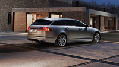
Hace tan solo dos días os ofrecíamos dos imágenes filtradas de la versión familiar del Jaguar XF, y ahora ya podemos mostraros una galería completa de imágenes junto a toda la información oficial que la marca ya ha suministrado antes de su puesta de largo en el Salón de Ginebra.
El Jaguar XF Sportbrake mide 4,96 metros de largo (de los cuales 2,9 metros son de batalla) y 1,87 metros de ancho, sin incluir los espejos retrovisores. Por tanto, es unos inapreciables 5 milímetros más largo que el actualizado Jaguar XF berlina en el que se basa.
Bajo el capó esconde motores de cuatro y seis cilindros, pero todos ellos turbodiésel por el momento. El propulsor de acceso a la gama es el cuatro cilindros de 2.2 litros mientras que los dos escalones siguientes son diferentes variantes del 3.0 litros V6 biturbo.
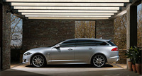
Como ya hemos dicho, el nuevo Jaguar XF Sportbrake está basado en el XF berlina que ha sido renovado recientemente tanto por fuera como por dentro. Desde el pilar B hasta la zaga el diseño es totalmente nuevo, aunque el frontal conserva esa mirada felina que tanto gusta.
Los nuevos faros bi-xenón HiD con luces diurnas en tecnología LED que ya recibió la berlina, con ese diseño en “J”, también los incorpora esta versión familiar. Por su parte, los grupos ópticos traseros también utilizan diodos LED para las funciones de frenado, luces e intermitencia.
El nuevo Jaguar XF Sportbrake estará disponible con dos paquetes de diseño exterior opcionales. El primero o Aero Pack, que es de serie en el modelo “S”, incluye cambios estéticos como un paragolpes delantero o un faldón trasero rediseñados. Por otra parte, el denominado Black Pack sustituye los acabados brillantes de los detalles exteriores por acabados en negro brillante.
Motorizaciones
Dos días atrás, cuando el XF Sportbrake que nos ocupa nos dejaba ver sus cuartos traseros, no conocíamos todavía qué motores escondería bajo el capó, pero esperábamos encontrar en la oferta motores de gasolina, incluido el V8 que equipa el XFR.
De momento la marca no ha contemplado la opción de un motor de gasolina, así que la oferta se limita a tres motorizaciones diésel: una de cuatro cilindros y dos basadas en un V6 de 3.0 litros de cilindrada y sobrealimentado por dos turbocompresores.
La opción de acceso a la gama es el cuatro cilindros de 2.2 litros que arroja una potencia de 190 CV y se combina con una transmisión automática de ocho velocidades y sistema Stop/Start de serie.
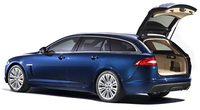
A continuación, las dos únicas opciones de la gama son variantes de un V6 biturbo de 3.0 litros. La primera de ellas consigue 240 CV mientras que la más potente, que es la versión “S” y de momento el tope de la gama XF Sportbrake, desarrolla 275 CV de potencia y 600 Nm de par motor máximo.
Bajo su piel el XF familiar esconde también algún cambio con respecto a la berlina, como la suspensión neumática autonivelante del eje trasero, que sustituye a los muelles helicoidales de ésta. El sistema opcional de suspensión adaptativa también está disponible para el Sportbrake.
Interior
Si echamos un vistazo al interior encontramos lujo y deportividad por igual. La marca asegura que hay “generoso espacio para cinco adultos” en el habitáculo y los asientos delanteros son especialmente envolventes y cómodos, ya que se trata de los introducidos en el XF 2012.
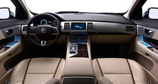
La selección de tapicerías e inserciones de aluminio o madera deja paso a mucha tecnología, como una pantalla táctil integrada en el centro de la consola desde la que controlar el sistema de navegación, así como otras funciones del propio vehículo.
Jaguar destaca la practicidad del modelo, ya que gracias a su diseño aumenta la habitabilidad de las plazas traseras (más espacio para la cabeza), y especialmente porque tiene una capacida de carga muy generosa de 550 litros, ampliable a 1.675 litros con los asientos traseros abatidos (60:40).
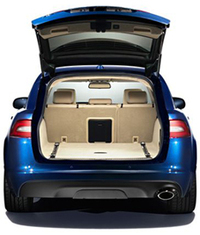
Los raíles del piso del maletero permiten instalar redes o sistemas de retención de bultos (opcionales, claro).
La marca resalta también la trampilla para los esquíes (o bultos largos) que conecta el habitáculo trasero con el maletero y la superficie de carga de casi dos metros de largo.
El portón trasero cuenta con un sistema automático de cierre suave y puede equipar una función de apertura y cierre eléctrico. ¡Ah! Y se puede equipar con un gancho de remolque de quita y pon.
Galería de fotos
(Haz click en una imagen para ampliarla)
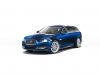
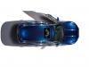
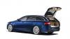
En Motorpasión | El Jaguar XF Sportbrake enseña sus cuartos traseros
Wed, 29 Feb 2012 13:00:00 GMT
La persecución de coches más larga jamás rodada
La persecución de coches más larga jamás rodada
Si tienes un montón de tiempo y te da por hacer un montaje con las persecuciones de coches más salvajes que hayas encontrado en 14 películas como, por ejemplo, ‘La Roca’, ‘Matrix Reloaded’, ‘Transformers’ y ‘El Sr. y la Sra. Smith’, es probable que acabes obteniendo una locura automovilística de 11 minutos y medio en los que raro es el coche que no sale quemando rueda. El vídeo se titula ‘Chasing Trinity part 2’. No, la 1 yo tampoco sé dónde anda, pero por si a alguien le interesa el supuesto argumento de la supuesta película (que lo dudo, pero bueno), el autor de este trepidante montaje lo explica así en YouTube: Will Smith está persiguiendo a Trinity después de que ella trata de escapar con los documentos secretos. Sean Connery no se queda atrás y Nicolas Cage trata de mantener el ritmo, pero ahí interviene Matt Damon. Y a partir de ese momento, es cuestión de asistir a un desfile de caballos de vapor desatados en una y otra secuencia. Yo he dado el título de algunas de las películas, pero tiene premio el que consiga hacer la lista más exhaustiva de deportivos que aparecen en pantalla. Vía | Jalopnik Vídeo | BlueYoda (YouTube)
Si tienes un montón de tiempo y te da por hacer un montaje con las persecuciones de coches más salvajes que hayas encontrado en 14 películas como, por ejemplo, ‘La Roca’, ‘Matrix Reloaded’, ‘Transformers’ y ‘El Sr. y la Sra. Smith’, es probable que acabes obteniendo una locura automovilística de 11 minutos y medio en los que raro es el coche que no sale quemando rueda.
El vídeo se titula ‘Chasing Trinity part 2’. No, la 1 yo tampoco sé dónde anda, pero por si a alguien le interesa el supuesto argumento de la supuesta película (que lo dudo, pero bueno), el autor de este trepidante montaje lo explica así en YouTube:
Will Smith está persiguiendo a Trinity después de que ella trata de escapar con los documentos secretos. Sean Connery no se queda atrás y Nicolas Cage trata de mantener el ritmo, pero ahí interviene Matt Damon.
Y a partir de ese momento, es cuestión de asistir a un desfile de caballos de vapor desatados en una y otra secuencia. Yo he dado el título de algunas de las películas, pero tiene premio el que consiga hacer la lista más exhaustiva de deportivos que aparecen en pantalla.
Vía | Jalopnik
Vídeo | BlueYoda (YouTube)
Wed, 29 Feb 2012 10:00:00 GMT
Chevrolet Corvette ZR1 contra Camaro ZL1 en circuito
Chevrolet Corvette ZR1 contra Camaro ZL1 en circuito
Chevrolet saca pecho y pajarita, en el mercado estadounidense lidera el segmento de deportivos y el de deportivos de lujo gracias al Camaro, que vive una época dorada al haber quitado el cetro al Ford Mustang, invicto durante años. El Corvette no va precisamente mal, se vende más del doble que el Porsche 911, su rival más cercano. Con esa excusa, GM llevó los Chevys más potentes al circuito de Virginia para demostrar a los periodistas del motor y público en general que sus coches se tienen merecida una buena reputación. Sí, es la misma presentación donde un periodista se dio un pequeño golpe con un Camaro ZL1. Se trata de un recorrido ratonero, un poco traidor, sin enormes escapatorias, ni amplios pianos, ni tantos elementos de contención. Es un trazado pensado para coches más pequeños, y estamos hablando no solo de coches grandes, sino muy musculados. El Corvette ZR1 tiene 638 CV (SAE) y el Camaro ZL1 se conforma con 580 CV (SAE). Hemos empezado con el Camaro ZL1 porque es el que menos corre, pero ojito a los datos. Ha soportado aceleraciones laterales de 1,2 G, y doy fe que eso es mucho. Al ser un V8 no impresionará a nadie por su elevado giro de motor, pero gracias a la sobrealimentacón, la aguja del velocímetro sube más de lo que parece. Turno del Vette: Palabras mayores. Quien diga que los coches yankis son solo para pisarrectas es un ignorante que no conoce modelos como el Corvette. Es orgásmico ver cómo acelera, cómo frena, cómo suena, cómo mantiene el tipo en apoyos a 1,4 G… para estar orgulloso de los coches americanos. Viendo este vídeo no he podido reprimir un flashback a 2008, hace ya cuatro años, cuando probé el humilde Corvete C6 en circuito, en Paul Ricard (parte 1, parte 2, parte 3). Solo con pensarlo doy golpes al escritorio por debajo y babeo. Si ya el “básico” era la Leche Picture Films, pensar en el ZR1… buf. Lástima habernos perdido esta presentación. No me habría importado volar 14 horas en clase turista ni la paliza por esos minutos de intenso placer, al volante del orgullo de Detroit. Al final, habría merecido la pena, seguro. Con la siguiente imagen lo digo todo, y no digo nada: Si no te ha dicho nada, cierra el navegador. No has tenido un buen día. Vídeo | Youtube (I, II)
Chevrolet saca pecho y pajarita, en el mercado estadounidense lidera el segmento de deportivos y el de deportivos de lujo gracias al Camaro, que vive una época dorada al haber quitado el cetro al Ford Mustang, invicto durante años. El Corvette no va precisamente mal, se vende más del doble que el Porsche 911, su rival más cercano.
Con esa excusa, GM llevó los Chevys más potentes al circuito de Virginia para demostrar a los periodistas del motor y público en general que sus coches se tienen merecida una buena reputación. Sí, es la misma presentación donde un periodista se dio un pequeño golpe con un Camaro ZL1.
Se trata de un recorrido ratonero, un poco traidor, sin enormes escapatorias, ni amplios pianos, ni tantos elementos de contención. Es un trazado pensado para coches más pequeños, y estamos hablando no solo de coches grandes, sino muy musculados. El Corvette ZR1 tiene 638 CV (SAE) y el Camaro ZL1 se conforma con 580 CV (SAE).
Hemos empezado con el Camaro ZL1 porque es el que menos corre, pero ojito a los datos. Ha soportado aceleraciones laterales de 1,2 G, y doy fe que eso es mucho. Al ser un V8 no impresionará a nadie por su elevado giro de motor, pero gracias a la sobrealimentacón, la aguja del velocímetro sube más de lo que parece. Turno del Vette:
Palabras mayores. Quien diga que los coches yankis son solo para pisarrectas es un ignorante que no conoce modelos como el Corvette. Es orgásmico ver cómo acelera, cómo frena, cómo suena, cómo mantiene el tipo en apoyos a 1,4 G… para estar orgulloso de los coches americanos.
Viendo este vídeo no he podido reprimir un flashback a 2008, hace ya cuatro años, cuando probé el humilde Corvete C6 en circuito, en Paul Ricard (parte 1, parte 2, parte 3). Solo con pensarlo doy golpes al escritorio por debajo y babeo. Si ya el “básico” era la Leche Picture Films, pensar en el ZR1… buf.
Lástima habernos perdido esta presentación. No me habría importado volar 14 horas en clase turista ni la paliza por esos minutos de intenso placer, al volante del orgullo de Detroit. Al final, habría merecido la pena, seguro. Con la siguiente imagen lo digo todo, y no digo nada:
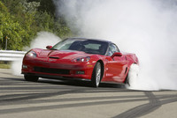
Si no te ha dicho nada, cierra el navegador. No has tenido un buen día.
Vídeo | Youtube (I, II)
Wed, 29 Feb 2012 07:00:00 GMT
Porsche 911 Carrera S por LUMMA Design
Porsche 911 Carrera S por LUMMA Design
Entre los preparadores alemanes más rápidos en meter mano al nuevo Porsche 911 se encuentra Lumma Design. Su creación sobre un Porsche 911 Carrera S se llama CLR 9 S y, además de haber podido ser perfectamente un Dolorpasión de domingo, se presenta de forma oficial en el Salón de Ginebra que comienza la semana próxima. Por fuera el Carrera S de Lumma Design recibe un kit aerodinámico compuesto por un paragolpes delantero de nuevo diseño con un labio inferior integrado, nuevos marcos para los faros delanteros o un spoiler trasero de tres piezas. El conjunto de vinilos decorativos también se ofrece. El preparador ofrece también para la nueva generación del Porsche 911 llantas de aleación ligera que no llegan a nueve kilos y medio de peso cada una de 20 pulgadas, ya sea acabadas en plata o en negro, y con neumáticos de altas prestaciones en medidas 245/30 R20 y 305/30 R20, delante y detrás, respectivamente. Lumma añade también un escape con cuatro salidas de 90 milímetros de diámetro y un sistema de apertura de válvulas que permite cambiar el sonido proveniente del motor. El escape está también disponible de manera individual, al igual que los componentes del kit aerodinámico. El interior del 911 se ha retapizado completamente con cuero de color rojo y alcántara para el salpicadero, el volante, el techo, los paneles de las puertas o la consola central. La pedalera de aluminio o las inserciones en las puertas del mismo material rematan el habitáculo. Galería de fotos (Haz click en una imagen para ampliarla)
Vía | German Car Scene En Motorpasión | Lumma Design prepara el BMW Serie 6 para el Salón de Ginebra
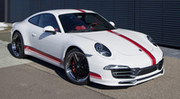
Entre los preparadores alemanes más rápidos en meter mano al nuevo Porsche 911 se encuentra Lumma Design. Su creación sobre un Porsche 911 Carrera S se llama CLR 9 S y, además de haber podido ser perfectamente un Dolorpasión de domingo, se presenta de forma oficial en el Salón de Ginebra que comienza la semana próxima.
Por fuera el Carrera S de Lumma Design recibe un kit aerodinámico compuesto por un paragolpes delantero de nuevo diseño con un labio inferior integrado, nuevos marcos para los faros delanteros o un spoiler trasero de tres piezas. El conjunto de vinilos decorativos también se ofrece.
El preparador ofrece también para la nueva generación del Porsche 911 llantas de aleación ligera que no llegan a nueve kilos y medio de peso cada una de 20 pulgadas, ya sea acabadas en plata o en negro, y con neumáticos de altas prestaciones en medidas 245/30 R20 y 305/30 R20, delante y detrás, respectivamente.
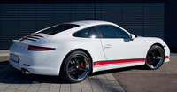
Lumma añade también un escape con cuatro salidas de 90 milímetros de diámetro y un sistema de apertura de válvulas que permite cambiar el sonido proveniente del motor. El escape está también disponible de manera individual, al igual que los componentes del kit aerodinámico.
El interior del 911 se ha retapizado completamente con cuero de color rojo y alcántara para el salpicadero, el volante, el techo, los paneles de las puertas o la consola central. La pedalera de aluminio o las inserciones en las puertas del mismo material rematan el habitáculo.
Galería de fotos
(Haz click en una imagen para ampliarla)
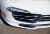
Vía | German Car Scene
En Motorpasión | Lumma Design prepara el BMW Serie 6 para el Salón de Ginebra
Tue, 28 Feb 2012 20:30:00 GMT
Las 500 Millas de Twitter
Las 500 Millas de Twitter
Foto tomada por B.Keselowski durante la carrera Lluvia, aplazamientos, accidentes, explosiones, fotos en carrera, redes sociales… No es una película de Hollywood, sino lo que ha ocurrido estos días al otro lado del charco, donde la temporada de Nascar se disponía a comenzar el pasado domingo con una de las pruebas clave, Las 500 Millas de Daytona. Las condiciones de la pista de Daytona el domingo, donde había llovido mucho, eran tan malas que la organización decidió posponer la carrera y el día de ayer fue el elegido para lanzar la temporada del campeonato automovilístico más importante de los Estados Unidos. Durante la carrera, que estuvo bastante movidita, Juan Pablo Montoya sufrió un espectacular accidente en el que perdió el control de su vehículo por un problema desconocido e impactó contra un camión que se encontraba en pista recogiendo restos de un accidente previo. Este incidente, con bola de fuego incluida, hizo detenerse la carrera durante el tiempo en el que se recogían los restos del percance y se limpiaba la pista. Mientras tanto, algo interesante ocurría por detrás. Otra de las imágenes subidas por el piloto durante la carrera Ni corto ni perezoso, el piloto Brad Keselowski (@keselowski), que se encontraba en carrera, y aprovechando el parón, echó mano de su teléfono móvil (que tenía en el bolsillo), tomó una foto de lo que estaba viendo en ese momento (la foto que acompaña el artículo) y la subió a su cuenta de Twitter. De ahí en adelante aprovechó la bandera roja para seguir twiteando desde el coche. Con esta maniobra “dentro de la pista”, pero que poco tiene que ver con la carrera en sí, Keselowsky aumentaba por segundos sus seguidores en Twitter, llegando a lograr sumar durante la carrera más de 100.000 nuevos seguidores en su cuenta personal de la conocida red social. ¿Qué os parece el asunto? ¿Se tomarán medidas contra este tipo de acciones por parte de los pilotos? Hoy en día que todo se considera peligroso… ¿se prohibirán cosas por el estilo? En algunos sitios he leído sobre si será o no la primera fotografía tomada por un piloto durante una carrera. Os dejo a vosotros echarnos una mano ¿Conocéis algún caso parecido? Fotografías | Brad Keselowski Vía | Axis of Oversteer
Foto tomada por B.Keselowski durante la carrera
Lluvia, aplazamientos, accidentes, explosiones, fotos en carrera, redes sociales… No es una película de Hollywood, sino lo que ha ocurrido estos días al otro lado del charco, donde la temporada de Nascar se disponía a comenzar el pasado domingo con una de las pruebas clave, Las 500 Millas de Daytona.
Las condiciones de la pista de Daytona el domingo, donde había llovido mucho, eran tan malas que la organización decidió posponer la carrera y el día de ayer fue el elegido para lanzar la temporada del campeonato automovilístico más importante de los Estados Unidos.
Durante la carrera, que estuvo bastante movidita, Juan Pablo Montoya sufrió un espectacular accidente en el que perdió el control de su vehículo por un problema desconocido e impactó contra un camión que se encontraba en pista recogiendo restos de un accidente previo. Este incidente, con bola de fuego incluida, hizo detenerse la carrera durante el tiempo en el que se recogían los restos del percance y se limpiaba la pista. Mientras tanto, algo interesante ocurría por detrás.
Otra de las imágenes subidas por el piloto durante la carrera
Ni corto ni perezoso, el piloto Brad Keselowski (@keselowski), que se encontraba en carrera, y aprovechando el parón, echó mano de su teléfono móvil (que tenía en el bolsillo), tomó una foto de lo que estaba viendo en ese momento (la foto que acompaña el artículo) y la subió a su cuenta de Twitter. De ahí en adelante aprovechó la bandera roja para seguir twiteando desde el coche.
Con esta maniobra “dentro de la pista”, pero que poco tiene que ver con la carrera en sí, Keselowsky aumentaba por segundos sus seguidores en Twitter, llegando a lograr sumar durante la carrera más de 100.000 nuevos seguidores en su cuenta personal de la conocida red social.
¿Qué os parece el asunto? ¿Se tomarán medidas contra este tipo de acciones por parte de los pilotos? Hoy en día que todo se considera peligroso… ¿se prohibirán cosas por el estilo?
En algunos sitios he leído sobre si será o no la primera fotografía tomada por un piloto durante una carrera. Os dejo a vosotros echarnos una mano ¿Conocéis algún caso parecido?
Fotografías | Brad Keselowski
Vía | Axis of Oversteer
Tue, 28 Feb 2012 18:30:00 GMT
Las ventas en Japón crecen espectacularmente gracias a las ayudas gubernamentales
Las ventas en Japón crecen espectacularmente gracias a las ayudas gubernamentales
Después de la tragedia que tuvo lugar en Japón tras el terremoto y posterior tsunami, la industria del automóvil japonesa quedó gravemente dañada. Desde luego, el simple hecho de comenzar una recuperación fuerte y sostenida en el tiempo ya ha sido un logro, pero eso no significa que el sector pase por su mejor momento. De hecho, en vista de los bajos datos de ventas, se anunciaron en diciembre una serie de ayudas directas para potenciar la compra de automóviles, que sólo recibirían aquellos que optaran por los coches más eficientes (no es la primera vez que este tipo de coches reciben en Japón ayudas estatales). En concreto, se anunció que el subsidio sería de 100.000 yenes, aproximadamente 920 euros, por cada coche. Los resultados en lo que va de año no han podido ser más positivos, las ventas se han recuperado considerablemente y hay quien habla de que Japón podría alcanzar los cinco millones de coches vendidos (dentro del país). Esto supondría un incremento del 19% respecto al año pasado, lo que supone un aumento espectacular. Por supuesto hay que decir que no sólo los subsidios son los culpables de esta mejora (la normalización en la fabricación y distribución de los vehículos tan bien ha ayudad por supuesto). En cualquier caso grandes noticias para un país que ha sufrido un enorme golpe y que está demostrando qué hacer para ponerse en pie de nuevo. Vía | Online News En Motorpasión | Ventas en Japón de 2011: Prius, Jazz y Yaris son los más vendidos, Japón favorecerá a los coches más eficientes otros tres años
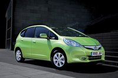
Después de la tragedia que tuvo lugar en Japón tras el terremoto y posterior tsunami, la industria del automóvil japonesa quedó gravemente dañada. Desde luego, el simple hecho de comenzar una recuperación fuerte y sostenida en el tiempo ya ha sido un logro, pero eso no significa que el sector pase por su mejor momento.
De hecho, en vista de los bajos datos de ventas, se anunciaron en diciembre una serie de ayudas directas para potenciar la compra de automóviles, que sólo recibirían aquellos que optaran por los coches más eficientes (no es la primera vez que este tipo de coches reciben en Japón ayudas estatales).
En concreto, se anunció que el subsidio sería de 100.000 yenes, aproximadamente 920 euros, por cada coche. Los resultados en lo que va de año no han podido ser más positivos, las ventas se han recuperado considerablemente y hay quien habla de que Japón podría alcanzar los cinco millones de coches vendidos (dentro del país).
Esto supondría un incremento del 19% respecto al año pasado, lo que supone un aumento espectacular. Por supuesto hay que decir que no sólo los subsidios son los culpables de esta mejora (la normalización en la fabricación y distribución de los vehículos tan bien ha ayudad por supuesto). En cualquier caso grandes noticias para un país que ha sufrido un enorme golpe y que está demostrando qué hacer para ponerse en pie de nuevo.
Vía | Online News
En Motorpasión | Ventas en Japón de 2011: Prius, Jazz y Yaris son los más vendidos, Japón favorecerá a los coches más eficientes otros tres años
Tue, 28 Feb 2012 17:30:21 GMT
"Sí, yo me cargué un Chevrolet Camaro ZL1 de prensa"
"Sí, yo me cargué un Chevrolet Camaro ZL1 de prensa"
En la profesión de periodista del motor a veces ocurren accidentes. Cuando se prueban coches, siempre hay un riesgo, y si estos son de altas prestaciones, más. Nuestro protagonista es Aaron Gold, un periodista norteamericano que trabaja para Top Gear USA y About.com Cars. Tiene el dudoso honor de ser el primero que se estampa con un Chevrolet Camaro ZL1. No llega a la categoría de Dolorpasión porque los daños del coche no han sido especialmente graves, Gold salió ileso, pero ya tiene una espina más en su curriculum. Estaba en un evento de prensa, en el circuito de Virginia, tratando de domar sus 580 CV SAE en condiciones poco adecuadas: empezando a lloviznar. Gold dice que conducía “despacito” en la zona lenta del circuito, pero acabó saliéndose de una curva a más de 190 km/h pisando los frenos a tope, hizo tres trompos y se dio un tortazo contra la barrera de neumáticos. Los daños puede que os impresionen pero insisto, no son para tanto. De la foto de prensa al coche chocado, sin toneladas de Photoshop, dista un mundo. Al parecer, solo sufrió un pequeño incendio y la rotura del depósito del agua del lavaparabrisas. Gold no solo subestimó la potencia del coche, también subestimó el poder deslizante de la lluvia. Los periodistas de la vieja escuela, que han rodado muchos kilómetros con ruedas estrechitas, suelen comentar que en los coches modernos con tanto ancho de neumático en lluvia van vendidos. Si una pista está repleta de goma, por el evidente uso del circuito, y encima llovizna, la pista se convierte en una pista de patinaje. Error de novato, señor Gold. El mismo Gold ha entonado el mea culpa sobre su pifia en About.com Cars, y para los que entiendan inglés, no tiene desperdicio. Afortunadamente solo ha sido un susto, en la presentación del Opel GT se mató un periodista (2007) y por poco su acompañante, eso ya no tiene arreglo. El morro del ZL1 sí lo tiene. Vía | Carscoop Fuente | About.com Cars En Motorpasión | Todo sobre el Chevrolet Camaro ZL1
En la profesión de periodista del motor a veces ocurren accidentes. Cuando se prueban coches, siempre hay un riesgo, y si estos son de altas prestaciones, más. Nuestro protagonista es Aaron Gold, un periodista norteamericano que trabaja para Top Gear USA y About.com Cars. Tiene el dudoso honor de ser el primero que se estampa con un Chevrolet Camaro ZL1.
No llega a la categoría de Dolorpasión porque los daños del coche no han sido especialmente graves, Gold salió ileso, pero ya tiene una espina más en su curriculum. Estaba en un evento de prensa, en el circuito de Virginia, tratando de domar sus 580 CV SAE en condiciones poco adecuadas: empezando a lloviznar.
Gold dice que conducía “despacito” en la zona lenta del circuito, pero acabó saliéndose de una curva a más de 190 km/h pisando los frenos a tope, hizo tres trompos y se dio un tortazo contra la barrera de neumáticos. Los daños puede que os impresionen pero insisto, no son para tanto.
De la foto de prensa al coche chocado, sin toneladas de Photoshop, dista un mundo. Al parecer, solo sufrió un pequeño incendio y la rotura del depósito del agua del lavaparabrisas. Gold no solo subestimó la potencia del coche, también subestimó el poder deslizante de la lluvia.
Los periodistas de la vieja escuela, que han rodado muchos kilómetros con ruedas estrechitas, suelen comentar que en los coches modernos con tanto ancho de neumático en lluvia van vendidos. Si una pista está repleta de goma, por el evidente uso del circuito, y encima llovizna, la pista se convierte en una pista de patinaje. Error de novato, señor Gold.
El mismo Gold ha entonado el mea culpa sobre su pifia en About.com Cars, y para los que entiendan inglés, no tiene desperdicio. Afortunadamente solo ha sido un susto, en la presentación del Opel GT se mató un periodista (2007) y por poco su acompañante, eso ya no tiene arreglo. El morro del ZL1 sí lo tiene.
Vía | Carscoop
Fuente | About.com Cars
En Motorpasión | Todo sobre el Chevrolet Camaro ZL1
Tue, 28 Feb 2012 15:16:03 GMT
Nissan llevará un SUV a Ginebra (sí, otro)
Nissan llevará un SUV a Ginebra (sí, otro)
Esto que vemos en pantalla es el Nissan Hi-Cross Concept, y anticipa un futuro modelo de producción. Estando el Qashqai, el Juke y el Patrol (que no se vende en Europa) más que presentados… lo lógico es que sea el anticipo del nuevo Nissan X-Trail, que se actualizó en 2010. Se aprecia un cambio de estilo, ya no sería un SUV de proporciones más cuadradas, sino algo más crossover, tipo Mazda CX-7. También podemos distinguir un diseño con más curvas, más esculpido, más aerodinámico y fácil de ver. Podrían intentar en segmento D lo mismo que ha pasado con el C y el Qashqai. Es decir, significa encasquetar un coche tipo SUV dentro de un mercado tradicionalmente de berlinas. Puede que funcione, puede que no, de momento con los crossover les va muy bien, por encima de sus expectativas. Ahora bien, a lo que al X-Trail respecta, significaría ir un poco atrás en habilidades camperas. Tendremos que esperar a la semana que viene para conocer más detalles. En Motorpasión | Nissan X-Trail 2010, pocos cambios exteriores
Esto que vemos en pantalla es el Nissan Hi-Cross Concept, y anticipa un futuro modelo de producción. Estando el Qashqai, el Juke y el Patrol (que no se vende en Europa) más que presentados… lo lógico es que sea el anticipo del nuevo Nissan X-Trail, que se actualizó en 2010.
Se aprecia un cambio de estilo, ya no sería un SUV de proporciones más cuadradas, sino algo más crossover, tipo Mazda CX-7. También podemos distinguir un diseño con más curvas, más esculpido, más aerodinámico y fácil de ver. Podrían intentar en segmento D lo mismo que ha pasado con el C y el Qashqai.
Es decir, significa encasquetar un coche tipo SUV dentro de un mercado tradicionalmente de berlinas. Puede que funcione, puede que no, de momento con los crossover les va muy bien, por encima de sus expectativas. Ahora bien, a lo que al X-Trail respecta, significaría ir un poco atrás en habilidades camperas.
Tendremos que esperar a la semana que viene para conocer más detalles.
En Motorpasión | Nissan X-Trail 2010, pocos cambios exteriores
Tue, 28 Feb 2012 09:27:05 GMT
Kia K9, la berlina de representación Coreana
Kia K9, la berlina de representación Coreana
Hace justamente una semana el señor Costas nos facilitaba un anticipio de lo que sería la nueva berlina de representación de Kia y ahora la marca ha decidido mostrar finalmente las primeras imágenes de su nuevo buque insignia, que llegará al mercado coreano en verano. El Kia K9, que se llamará así en Corea pero de momento no sabemos qué nombre recibirá en otros mercados, es el primer sedán de la marca con propulsión trasera y viene a complementar la oferta del fabricante en su propio mercado junto a los modelos K5 (Kia Optima) y K7 (Kia Cadenza). Llegará con motores en uve de gasolina, incluido un V8, aunque de momento no se han proporcionado más datos. Este K9 es la última evolución del ADN de diseño de Kia, como demuestra la parrilla delantera, pero también nos resulta familiar… Por un lado la trasera nos trae a la mente el Renault Latitude, e incluso las ópticas traseras podrían recordarnos al BMW Serie 5. El caso es que a mí por delante se me da un aire también al BMW Serie 6, y de perfil tiene algún rasgo de Maserati ¿verdad? ¡Qué cacao! Galería de fotos (Haz click en una imagen para ampliarla)
En Motorpasión | Kia KH, anticipo de la próxima berlina de Kia
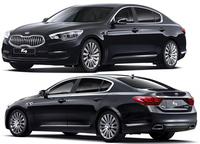
Hace justamente una semana el señor Costas nos facilitaba un anticipio de lo que sería la nueva berlina de representación de Kia y ahora la marca ha decidido mostrar finalmente las primeras imágenes de su nuevo buque insignia, que llegará al mercado coreano en verano.
El Kia K9, que se llamará así en Corea pero de momento no sabemos qué nombre recibirá en otros mercados, es el primer sedán de la marca con propulsión trasera y viene a complementar la oferta del fabricante en su propio mercado junto a los modelos K5 (Kia Optima) y K7 (Kia Cadenza). Llegará con motores en uve de gasolina, incluido un V8, aunque de momento no se han proporcionado más datos.
Este K9 es la última evolución del ADN de diseño de Kia, como demuestra la parrilla delantera, pero también nos resulta familiar… Por un lado la trasera nos trae a la mente el Renault Latitude, e incluso las ópticas traseras podrían recordarnos al BMW Serie 5. El caso es que a mí por delante se me da un aire también al BMW Serie 6, y de perfil tiene algún rasgo de Maserati ¿verdad? ¡Qué cacao!
Galería de fotos
(Haz click en una imagen para ampliarla)
En Motorpasión | Kia KH, anticipo de la próxima berlina de Kia
Mon, 27 Feb 2012 20:02:48 GMT
Giugiaro nos enseña cómo será su propuesta para Ginebra
Giugiaro nos enseña cómo será su propuesta para Ginebra
Antes de entrar en materia, dejadme poner a todo el mundo en antecedentes. Italdesign Giugiaro, es desde 2010, una empresa cuyo máximo accionista es el grupo Volkswagen, en concreto, el 90% de las acciones de la compañía pertenece a una filial italiana del grupo VAG, Lamborghini Holding. Por eso, el hecho de que Giugiaro presente durante el próximo Salón de Ginebra su próxima propuesta de diseño ha levantado un mar de rumores sobre la marca del grupo que recibirá esta inspiración. Este es el primer proyecto que ambas marcas presentan juntos desde la entrada accionarial del Volkswagen en la marca italiana, aunque hay que recordar que no es ni mucho menos la primera (Volkswagen Golf, Passat y Scirocco, Audi 80). Dicho esto ahora toca escrudriñar el escueto vídeo en busca de pistas que nos permitan adivinar por donde van los tiros, aunque no es tarea fácil. Lo más destacable es que nos enseña unos faros delanteros escamoteables (apuntan con buen ojo en los comentarios que podría ser una cámara más bien), al estilo de modelos gloriosos como el Lamborghini Diablo, y que además emplean tecnología LED. La pieza del principio es para mí una incógnita, no logro encajarla con seguridad en un lugar concreto, a ver qué se os ocurre a vosotros. En cualquier caso poca espera nos falta, el Salón de Ginebra está a punto de empezar. En Motorpasión | Volkswagen compra el 90% de Italdesign Giugiaro
Antes de entrar en materia, dejadme poner a todo el mundo en antecedentes. Italdesign Giugiaro, es desde 2010, una empresa cuyo máximo accionista es el grupo Volkswagen, en concreto, el 90% de las acciones de la compañía pertenece a una filial italiana del grupo VAG, Lamborghini Holding.
Por eso, el hecho de que Giugiaro presente durante el próximo Salón de Ginebra su próxima propuesta de diseño ha levantado un mar de rumores sobre la marca del grupo que recibirá esta inspiración.
Este es el primer proyecto que ambas marcas presentan juntos desde la entrada accionarial del Volkswagen en la marca italiana, aunque hay que recordar que no es ni mucho menos la primera (Volkswagen Golf, Passat y Scirocco, Audi 80). Dicho esto ahora toca escrudriñar el escueto vídeo en busca de pistas que nos permitan adivinar por donde van los tiros, aunque no es tarea fácil.
Lo más destacable es que nos enseña unos faros delanteros escamoteables (apuntan con buen ojo en los comentarios que podría ser una cámara más bien), al estilo de modelos gloriosos como el Lamborghini Diablo, y que además emplean tecnología LED. La pieza del principio es para mí una incógnita, no logro encajarla con seguridad en un lugar concreto, a ver qué se os ocurre a vosotros. En cualquier caso poca espera nos falta, el Salón de Ginebra está a punto de empezar.
En Motorpasión | Volkswagen compra el 90% de Italdesign Giugiaro
Mon, 27 Feb 2012 14:26:42 GMT
Volkswagen Passat Alltrack, en España desde 33.030 euros
Volkswagen Passat Alltrack, en España desde 33.030 euros
Volkswagen acaba de anunciar la llegada a España durante el próximo mes de mayo de su familiar más campero, el Volkswagen Passat Alltrack, que ya os avanzamos en noviembre, y lo hace con un precio realmente ajustado: 33.030 euros por la versión de acceso, basada en el motor 1.8 TSI de 160 CV, con un nivel de acabados de berlina premium. Las cinco versiones que se ponen a la venta, dos de gasolina y tres de gasóleo, incorporan de serie el programa Off-road que toman de los Volkswagen Touareg y Volkswagen Tiguan. Además, las versiones avanzadas equipan tracción total 4Motion con transmisión de doble embrague DSG y diferencial electrónico de deslizamiento limitado XDS para completar el carácter todocamino propio de esta versión. Por lo demás, se han cuidado los detalles que dan sentido a la parte familiar del vehículo, como en el caso del ESP con estabilización del conjunto de remolque y asistente de contraviraje integrados, que viene de serie, o en opciones tales como el suelo de maletero modular, el gancho de remolque orientable o los asientos con función de masaje. No es mal precio el que ofrece Volkswagen para esta versión de su familiar. Por poner la cifra en contexto, tenemos que un Volkswagen Passat Variant Edition, que es el más básico de la familia, presenta un precio de salida de 26.260 euros, mientras que el Highline, el más equipado de la gama, sale por un mínimo de 32.440 euros. Si tenemos en cuenta que lo de “Alltrack” no consiste simplemente en ponerle una chapita al coche, sino que se ha aumentado en 30 milímetros la distancia al suelo para mejorar los ángulos de ataque, salida y rampa, además de implementar las mejoras tecnológicas que permiten un buen control del vehículo fuera del asfalto, estamos ante un coche cuya relación entre lo que se desembolsa y lo que se obtiene a cambio vale la pena considerar… si pensamos sacarle partido a sus especificidades, claro. Tabla de precios del Volkswagen Passat Alltrack
Versión
Precio
Passat Alltrack 1.8 TSI 160cv.
33.030 €
Passat Alltrack 2.0 TSI 210cv. DSG 4Motion
42.040 €
Passat Alltrack 2.0 TDI 140cv. BlueMotion
33.200 €
Passat Alltrack 2.0 TDI 140cv. 4Motion BlueMotion
34.920 €
Passat Alltrack 2.0 TDI 170cv. DSG 4Motion BlueMotion
39.350 €
Galería de fotos (Haz click en una imagen para ampliarla)
En Motorpasión | Volkswagen Passat Alltrack, el más campero de la gama
.jpg)
Volkswagen acaba de anunciar la llegada a España durante el próximo mes de mayo de su familiar más campero, el Volkswagen Passat Alltrack, que ya os avanzamos en noviembre, y lo hace con un precio realmente ajustado: 33.030 euros por la versión de acceso, basada en el motor 1.8 TSI de 160 CV, con un nivel de acabados de berlina premium.
Las cinco versiones que se ponen a la venta, dos de gasolina y tres de gasóleo, incorporan de serie el programa Off-road que toman de los Volkswagen Touareg y Volkswagen Tiguan. Además, las versiones avanzadas equipan tracción total 4Motion con transmisión de doble embrague DSG y diferencial electrónico de deslizamiento limitado XDS para completar el carácter todocamino propio de esta versión.
Por lo demás, se han cuidado los detalles que dan sentido a la parte familiar del vehículo, como en el caso del ESP con estabilización del conjunto de remolque y asistente de contraviraje integrados, que viene de serie, o en opciones tales como el suelo de maletero modular, el gancho de remolque orientable o los asientos con función de masaje.
.jpg)
No es mal precio el que ofrece Volkswagen para esta versión de su familiar. Por poner la cifra en contexto, tenemos que un Volkswagen Passat Variant Edition, que es el más básico de la familia, presenta un precio de salida de 26.260 euros, mientras que el Highline, el más equipado de la gama, sale por un mínimo de 32.440 euros.
Si tenemos en cuenta que lo de “Alltrack” no consiste simplemente en ponerle una chapita al coche, sino que se ha aumentado en 30 milímetros la distancia al suelo para mejorar los ángulos de ataque, salida y rampa, además de implementar las mejoras tecnológicas que permiten un buen control del vehículo fuera del asfalto, estamos ante un coche cuya relación entre lo que se desembolsa y lo que se obtiene a cambio vale la pena considerar… si pensamos sacarle partido a sus especificidades, claro.
Tabla de precios del Volkswagen Passat Alltrack
| Versión |
Precio |
| Passat Alltrack 1.8 TSI 160cv. |
33.030 € |
| Passat Alltrack 2.0 TSI 210cv. DSG 4Motion |
42.040 € |
| Passat Alltrack 2.0 TDI 140cv. BlueMotion |
33.200 € |
| Passat Alltrack 2.0 TDI 140cv. 4Motion BlueMotion |
34.920 € |
| Passat Alltrack 2.0 TDI 170cv. DSG 4Motion BlueMotion |
39.350 € |
Galería de fotos
(Haz click en una imagen para ampliarla)
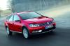
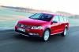
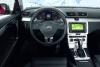
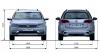
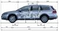
En Motorpasión | Volkswagen Passat Alltrack, el más campero de la gama